Sistema Complemento
Contexto e motivação — por que isso existe
O melhor jeito de entender o sistema complemento é voltar à história. No fim do século XIX, o belga Jules Bordet (o mesmo que dá nome à Bordetella pertussis, a bactéria da coqueluche) pegou soro de carneiro e mergulhou nele bactérias do Vibrio cholerae (o agente da cólera). Cerca de uma hora depois, olhou ao microscópio: as bactérias estavam lisadas, em pedaços. Suspeitou de uma proteína com atividade enzimática. Para confirmar, repetiu o experimento, mas antes aqueceu o soro a 56 °C. Resultado: as bactérias ficaram íntegras. Se o aquecimento inibiu a lise, o agente só podia ser proteína (calor desnatura proteína). Esse trabalho lhe rendeu o Nobel de Medicina em 1919.
Quem batizou o sistema foi, na prática, o alemão Paul Ehrlich (contemporâneo de Bordet, ligado ao Instituto Pasteur), ao notar que "a atividade do soro complementa a ação do anticorpo". Daí o nome complemento. É por isso, inclusive, que estudamos anticorpo e logo depois complemento: algumas imunoglobulinas são capazes de ativá-lo.
Definição que você precisa fixar: o sistema complemento é um sistema de proteínas que faz a lise de microrganismos. É para isso que ele existe. Não é célula — é proteína, produzida no fígado e lançada no plasma. De modo simplificado falamos em 9 proteínas principais (C1 a C9); considerando todas as proteínas das três vias e seus detalhes, chega-se a 32 proteínas. A ativação é sequencial — o que chamamos de ativação em cascata: uma proteína ativa a seguinte, que ativa a próxima, e assim por diante.
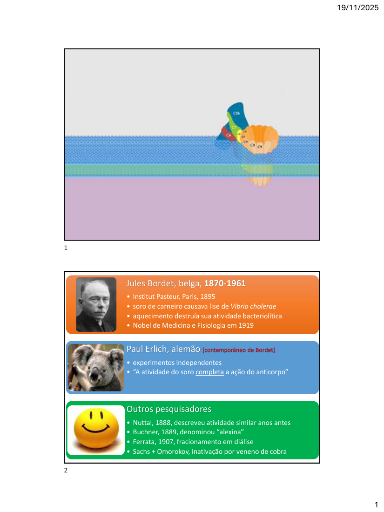
⚑ CAI NA PROVA — Por que "FC" significa fragmento cristalizável (e NÃO fixação de complemento)
O professor faz questão de desfazer um erro comum de internet: muita gente no YouTube diz que FC quer dizer "fixação de complemento". Está errado. O F é de fragmento e o C é de cristalizável. Quando se dissocia o anticorpo em duas metades, essa porção (o "talo" do Y) cristalizava mais rápido que a outra — daí o nome. A confusão acontece porque é justamente pela porção FC que o complemento se liga ao anticorpo na via clássica — mas a sigla nada tem a ver com isso. Raciocínio cobrado: saber a origem do termo e não cair na pegadinha.
O sistema funciona 24 horas por dia
Não somos organismos estéreis: a cada inspiração e a cada alimento engolido introduzimos microrganismos. O complemento age o tempo todo, não só no momento da apresentação de antígeno ou da ativação de linfócitos. Se ele não funcionasse, qualquer um de nós estaria desenvolvendo infecções neste exato momento. É por isso que ele é tão importante — e por isso que a sua falha tem consequência clínica grave.
⚑ CAI NA PROVA — A tríade que faz suspeitar de imunodeficiência
"Não esqueçam mais", insistiu o professor. Toda proteína vem de um gene; se há falha na expressão do gene de uma proteína do complemento, surge uma imunodeficiência primária, e o paciente passa a ter infecções de repetição (bacterioses e micoses, raramente por protozoário). O gatilho diagnóstico é uma tríade de características do quadro infeccioso: infecções crônicas, recidivantes (repetidas) ou oportunistas. Diante de qualquer uma dessas três, "acenda a luz" e investigue imunodeficiência (primária OU secundária).
⚑ CAI NA PROVA — Deficiência de C3 (mais comum) × C5 (mais rara)
Deficiências de complemento são raras. Entre elas, a que mais se manifesta é a deficiência de C3; a que menos se manifesta — ou seja, a mais rara — é a deficiência de C5. O raciocínio que o professor amarra: como a ativação é sequencial, interromper um componente impede a ação dos seguintes. Sem C3 não há C3-convertase funcional adiante; sem C5 não há via terminal — nem clássica, nem alternativa, nem das lectinas chegam ao fim. Resultado: o complemento não faz aquilo para que existe, a lise.
As três vias de ativação
Existem três vias de ativação que convergem na formação de C3-convertases e numa via efetora comum, culminando no complexo de ataque à membrana (MAC).[1] A via clássica é iniciada pela ligação de C1q a complexos antígeno-anticorpo (principalmente IgM e IgG); ativam-se C1r e C1s, que clivam C4 e C2 formando a C3-convertase C4b2a.[1] A via das lectinas é ativada quando a lectina ligadora de manose (MBL) ou ficolinas reconhecem carboidratos (manose, N-acetilglicosamina) na superfície de patógenos; as proteases MASP clivam C4 e C2, formando a mesma C3-convertase da via clássica.[1] A via alternativa depende da hidrólise espontânea contínua de C3 (tick-over), gerando C3b que se liga ao fator B; o fator D cliva o fator B formando a C3-convertase C3bBb, estabilizada pela properdina.[2]
As três vias — a analogia dos interruptores
Pense numa sala com vários interruptores em pontos diferentes: você acende a mesma luz apertando qualquer um deles. Assim é o complemento: três modos de acionar (via clássica, alternativa e das lectinas), mas o desfecho é o mesmo — a morte do microrganismo. As três diferem só no início; a partir de certo ponto, tudo segue por uma via comum.
⚑ CAI NA PROVA — "A via clássica eu vou cobrar de vocês"
Palavras textuais: "você não precisa saber todas, mas a via clássica eu vou cobrar de vocês." Da alternativa e das lectinas basta entender o funcionamento geral; a clássica tem de estar na ponta da língua, passo a passo. É o foco principal desta aula para a prova.
Via clássica — passo a passo (decore esta sequência)
Cenário: sobre a membrana de uma bactéria há determinantes antigênicos (epítopos). No plasma — tanto no sangue quanto no líquido intersticial — circulam anticorpos e todas as proteínas do complemento (C1, C2, C3, C4...). Entender que tudo isso está "nadando" no plasma é o ponto mais importante; o resto é consequência.
1) Início. Um anticorpo da classe IgG ou IgM (as duas únicas que ativam a via clássica) liga-se ao epítopo da bactéria pela sua porção FAB (a "ponta" do encaixe chama-se parátopo; o sítio do antígeno, epítopo).
2) Recrutamento de C1. O C1, que passava no plasma, "vê" o anticorpo já ancorado no antígeno e se acopla a ele pela porção FC do anticorpo. Essa ligação provoca uma alteração conformacional no C1. Como mudança de forma = mudança de função, o C1, que era inerte, vira agora uma tesoura (protease de clivagem).
3) Aqui começa a "bagunça numérica". A ordem de batismo das proteínas não é a ordem funcional. A primeira proteína que o C1 cliva é o C4 (não o C2!). Toda clivagem gera dois pedaços, a e b: surgem C4a (vai embora, "dá linha na pipa", para o plasma) e C4b (fica ancorado na superfície).
4) Em seguida o C1 cliva o C2 em C2a e C2b. Aqui fica o C2a (e o C2b vai embora).
5) C3-convertase. O par que ficou na superfície, C4b2a, sofre alteração conformacional e vira nova tesoura: é a C3-convertase. Ela cliva o C3 em C3a (vai embora) e C3b (fica).
6) C5-convertase. Quando o C3b se soma ao complexo, forma-se C4b2a3b, que é a C5-convertase (também chamada C3/C5-convertase, porque a C3-convertase está "contida" nela). Ela cliva o C5 em C5a (vai embora) e C5b (fica).
Resumo do que fica acumulado sobre a bactéria: anticorpo → C1 → C4b · 2a · 3b · 5b. A partir do C5b não há mais clivagem — só agregação. Atenção à nomenclatura: as únicas estruturas com nome próprio são C4b2a = C3-convertase e C4b2a3b = C5-convertase (ou C3/C5-convertase).
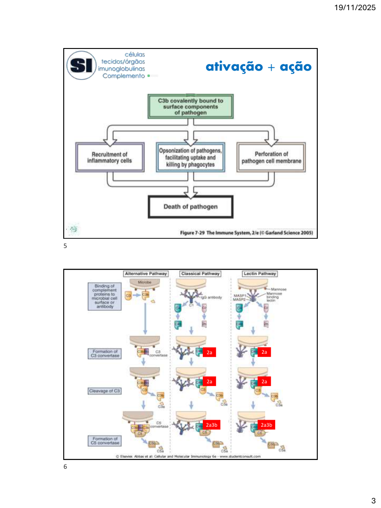
⚑ CAI NA PROVA — A nomenclatura fora de ordem (C1 cliva C4 antes de C2)
A pegadinha clássica: a ordem do batismo (C1, C2, C3...) não é a ordem da função. Na via clássica, o C1 cliva primeiro o C4, depois o C2, só então o C3 e por fim o C5 — "começa no 1, termina no 9, mas no meio tem uma bagunça". Decore: C1 → C4 → C2 → C3 → C5 → C6 → C7 → C8 → C9. E saiba apontar as convertases: C4b2a (C3-convertase) e C4b2a3b (C5-convertase).
Via comum / MAC (C5b-9)
A via terminal é a mesma para as três vias. Após a clivagem de C5, o C5b liga C6 e C7 (o complexo C5b-7 insere-se na membrana); o C8 inicia a penetração; e a polimerização de até ~18 moléculas de C9 forma um poro transmembrana em anel — o MAC (C5b-9).[3] O poro causa lise osmótica. Além da lise, o complemento ainda promove opsonização (via C3b) e quimiotaxia/inflamação pelas anafilatoxinas C3a e C5a.[1]
Via comum — a formação do poro (MAC / poli-C9)
A partir do C5b ancorado, tudo é agregação, e agora a numeração fica fácil (ordem certinha). O C5b atrai o C6, que permite o encaixe do C7, que permite o do C8. Esses componentes "atarracham" (fixam firmemente) o complexo à membrana — como cravar uma estaca no chão antes de erguer a cerca. Por quê? Porque o que vem depois precisa de apoio sólido.
Em seguida chega o C9 — e não vem uma molécula só, vêm várias: é o poli-C9. Elas se juntam e formam um canal que atravessa a membrana, com três regiões: extracelular, transmembrana e intracelular. O canal é hidrofóbico por fora (repele água, fica estável na bicamada lipídica) e hidrofílico por dentro (atrai água). A água entra, a célula incha e rompe: está feita a lise osmótica. É uma lesão de membrana, portanto irreversível (ponto de não retorno) — o microrganismo está morto.
Esse poli-C9 responsável pela lise tem nome: MAC — em inglês, Membrane Attack Complex (complexo de ataque à membrana).
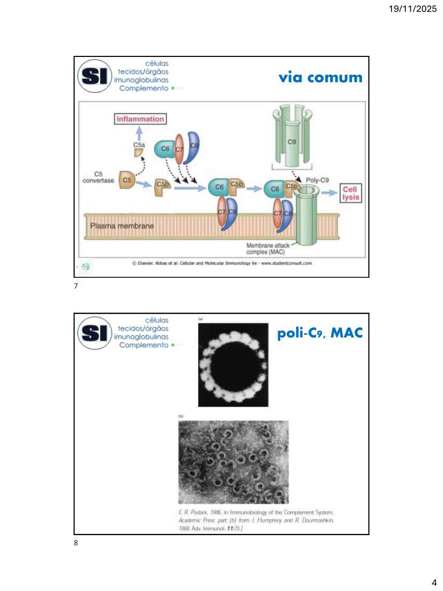
Via alternativa e via das lectinas (entender, não decorar passo a passo)
Via alternativa — é a que ocorre com mais frequência e a mais simples, porque depende basicamente do C3. Ao encontrar cargas elétricas na membrana de um microrganismo, o C3 fica instável e se cliva espontaneamente; o C3b fica ancorado, recruta o fator B (clivado em Ba e Bb) e é estabilizado pela properdina, montando uma C5-convertase que segue para a via comum. Não precisa de anticorpo.
Via das lectinas — iniciada por uma molécula de lectina (MBL) que se liga à manose, um açúcar muito presente na parede de bactérias e fungos. A partir daí ela é idêntica à via clássica: cliva C4, cliva C2 (C4b2a), depois C3 (C4b2a3b), depois C5, e converge na via comum. A diferença está só no gatilho inicial: a clássica começa com anticorpo, a das lectinas com a lectina ligada à manose.
O complemento é da imunidade INATA — e a questão da especificidade
De onde vem o anticorpo da via clássica? Ele não precisa ter sido feito sob medida para aquele antígeno. O complemento é parte da imunidade inata — não tem nada de "crônico"/adaptativo. O encaixe entre anticorpo e antígeno é dado pela forma (estrutura). Como podem existir moléculas com formas semelhantes, um anticorpo produzido contra um antígeno pode ligar-se inespecificamente a outro parecido. É a reatividade cruzada: a via clássica tem um pouco mais de especificidade que as outras, mas o sistema como um todo é inespecífico.
⚑ CAI NA PROVA — Reatividade cruzada: febre reumática e o falso-positivo de HIV
Dois exemplos que o professor cobra exigindo o mecanismo (a resposta "porque um é parecido com o outro" vale nota parcial, não a nota cheia — ele anula se você não explicar):
Febre reumática — após infecção por estreptococo (estreptococcia), o indivíduo produz anticorpos específicos contra o estreptococo. Esses anticorpos reconhecem uma proteína do coração que tem a mesma forma do antígeno bacteriano. É doença imunomediada por reatividade cruzada.
Falso-positivo de HIV pós-vacina de gripe — a bula da vacina antigripal importada (Sanofi, 1995–96) recomendava não fazer teste de HIV por ~6 meses. Motivo: o anticorpo produzido contra o vírus da gripe é estruturalmente semelhante ao anti-HIV. O teste (ELISA anti-HIV) procura o anticorpo anti-HIV; o anticorpo antigripal cruza com o antígeno do HIV no ensaio e dá positivo falso. A explicação completa exige citar que o teste detecta anticorpo e que há semelhança de forma entre os antígenos.
Regulação do complemento — CD55 e CD59 (e a HPN)
Se o complemento lisa microrganismos, por que não lisa as nossas células, banhadas no mesmo plasma? Porque nossas células carregam proteínas reguladoras ancoradas na membrana. Duas centrais:
- CD59 — impede a polimerização do C9, bloqueando a formação do MAC (atua tardiamente, na via comum).
- CD55 (DAF) — atua mais cedo: acelera a destruição da C3-convertase, impedindo que ela sequer se forme/persista. Corta o mecanismo com mais antecedência.
Para que CD55 e CD59 fiquem na membrana, é preciso uma "âncora" química: o GPI (glicana-fosfatidil-inositol). Sem GPI, não há onde fixar as proteínas reguladoras.
Caso clínico — Hemoglobinúria Paroxística Noturna (HPN)
O slide traz um caso real: homem de 66 anos com 7 anos de HPN não tratada, com febre, mal-estar, artralgia e erupção cutânea; hemoglobina 7,8 g/dL, reticulócitos 3,1%, plaquetas 26.000/mm³, LDH 1638 U/L (consistente com hemólise em curso) e hematúria/hemoglobinúria expressivas. A imunofenotipagem mostrou granulócitos com baixa expressão de CD16/ausência de CD66b e 5% das hemácias negativas para CD55 e CD59 (clone tipo III). Surgiram tromboses dérmicas (lesões necróticas), tratadas com heparina; e foi administrada vacina meningocócica em preparo para o eculizumabe.
A essência do mecanismo: na HPN há uma mutação que abole a produção de GPI. Sem GPI, as células não exibem CD55 nem CD59 e ficam à mercê do complemento. Importante: o defeito é em todas as células nucleadas (leucócitos, células de pele, mucosa etc.), por isso há também leucopenia ao longo do tempo. Mas o que mais chama atenção é a hemólise: a hemoglobina liberada é um pigmento e marca a urina — e o exame de urina é diário, enquanto o hemograma é esporádico. Daí o nome: hemoglobinúria.
Não é doença autoimune: não há resposta específica formada contra as próprias células — quem age é o complemento (imunidade inata). Por isso é classificada como imunomediada, não autoimune. A gravidade depende do grau de perda do GPI: perda parcial é mais controlável; perda total tende a ser fatal.
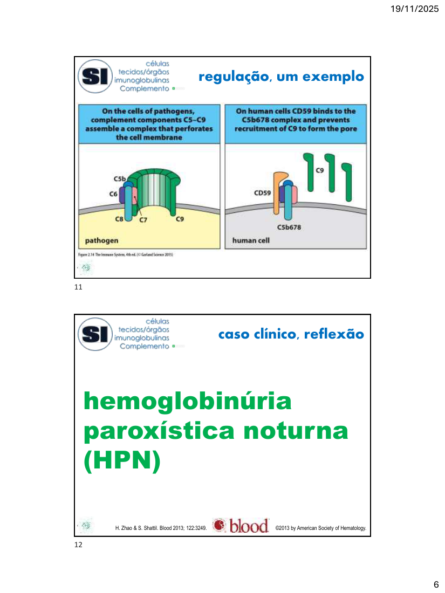
HPN e eculizumabe — fechando o raciocínio com evidência
A HPN é um distúrbio clonal adquirido da célula-tronco hematopoética: uma mutação somática no gene PIG-A compromete a síntese da âncora GPI, gerando deficiência de CD55 e CD59 e, consequentemente, hemólise intravascular crônica mediada pelo complemento.[4] O eculizumabe é um anticorpo monoclonal humanizado anti-C5 que impede a clivagem de C5, bloqueando a formação do MAC e a liberação de C5a — aprovado para HPN (2007) e para síndrome hemolítico-urêmica atípica (2011).[5] Como o bloqueio de C5 inibe a via terminal, esses pacientes ficam mais suscetíveis à doença meningocócica, o que justifica a vacinação anti-meningocócica antes de iniciar o fármaco.[6]
Deficiências de complemento e padrão de infecção
Deficiências dos componentes terminais (C5–C9) e da via alternativa predispõem de forma característica a infecções recorrentes por Neisseria (N. meningitidis e N. gonorrhoeae), porque sem MAC não há lise dessas bactérias.[6] Já a deficiência de C3 (rara) compromete principalmente a opsonização mediada por C3b, levando a infecções piogênicas graves por bactérias encapsuladas.[6]
Conexões com outras aulas
Com Imunoglobulinas: só IgG e IgM ativam a via clássica, e fazem-no pela porção FC — ligação direta com o estudo de estrutura de anticorpo (FAB/FC, parátopo/epítopo). Com Imunodeficiências: a tríade crônica/recidivante/oportunista vale para qualquer imunodeficiência, primária ou secundária. Com a próxima aula (Hipersensibilidade): a reatividade cruzada vista aqui (febre reumática) é a ponte para os mecanismos de dano imunomediado — a febre reumática é exemplo de hipersensibilidade tipo II/III por anticorpos.
- Complemento = sistema de proteínas hepáticas (9 principais / 32 no total) que faz lise de microrganismos, em cascata; história: Bordet (lise do Vibrio, inativada a 56°C) e Ehrlich (nome "complemento").
- FC = fragmento cristalizável, NÃO "fixação de complemento" (mas é por ele que o C1 se liga ao anticorpo).
- Três vias convergem numa via comum: clássica (IgG/IgM), alternativa (C3, sem anticorpo, mais frequente) e lectinas (MBL-manose, idêntica à clássica após o início).
- Via clássica (decorar): anticorpo → C1 (tesoura) → cliva C4 antes de C2 → C4b2a = C3-convertase → C4b2a3b = C5-convertase → C5b.
- Via comum: C5b→C6→C7→C8 (fixam na membrana) → poli-C9 = MAC → poro → lise osmótica irreversível.
- Regulação: CD59 bloqueia polimerização do C9 (MAC); CD55 destrói a C3-convertase; ambas ancoradas por GPI.
- HPN: falta de GPI → sem CD55/CD59 → lise das próprias células (hemólise + leucopenia); imunomediada, não autoimune; trata-se com eculizumabe (anti-C5) após vacina meningocócica.
- Deficiências: C3 a mais comum, C5 a mais rara; suspeite de imunodeficiência diante de infecções crônicas, recidivantes ou oportunistas; reatividade cruzada explica febre reumática e falso-positivo de HIV pós-vacina.
Anticorpos / Imunoglobulinas
Contexto e motivação — por que o anticorpo é central na clínica
O anticorpo é, antes de tudo, uma proteína. Essa é a primeira coisa a fixar, porque tudo o que vem depois deriva dela: se é proteína, existe um gene que a codifica; se há gene, pode haver mutação; e se há proteína no sangue, ela pode ser detectada e usada como ferramenta. Quem produz o anticorpo é o linfócito B — mais especificamente, quando ele se diferencia em plasmócito. O plasmócito tem citoplasma mais abundante exatamente porque, no processo de diferenciação, ampliou seu retículo endoplasmático e seu aparato de síntese, ganhando capacidade de fabricar grandes quantidades de proteína.
O anticorpo é secretado pelo linfócito B e vai parar no sangue, mas também está presente no líquido intersticial (fluido extracelular / plasma intersticial), porque o linfócito B migra para os tecidos e secreta anticorpo ali também. Como o anticorpo está no sangue, podemos estudá-lo no laboratório. O professor faz questão de corrigir um vício de linguagem: não se diz "dosagem de anticorpo", e sim pesquisa de anticorpo — você não está estabelecendo dose, está medindo a concentração presente. O mesmo vale para glicose, sódio, ureia: o termo correto é pesquisa/medida, não "dosagem".
⚑ CAI NA PROVA — PLASMA × SORO (o professor chamou de "vergonhoso" não saber)
Este é o ponto que o professor mais martelou, repetindo "vergonhoso, vergonhoso, vergonhoso" ao relatar que médicos de pós-graduação não souberam responder. A diferença vem do tubo de coleta e do que sobra na parte líquida do sangue após a centrifugação:
- PLASMA = sangue coletado COM anticoagulante. Reproduz fielmente o que circula in vivo: parte líquida do sangue com todos os elementos preservados, incluindo as proteínas de coagulação. Mnemônico do professor: P de Proteínas (de coagulação) Preservadas → Plasma.
- SORO = sangue coletado SEM anticoagulante. Sem anticoagulante, a coagulação ocorre: os fatores de coagulação são consumidos para formar a rede de fibrina. A parte líquida que sobra não tem mais fatores de coagulação nem fibrina. Mnemônico: Sem anticoagulante → Soro.
O raciocínio que ele quer que você carregue: na prática, é o médico quem decide e orienta a coleta — "quero creatinina sérica, não plasmática"; "quero eletroforese plasmática, não sérica". Errar isso na cabeceira do leito é grave.
Como se obtém o material — centrifugação
Após a punção venosa (sistema a vácuo, em que o sangue flui por diferença de pressão para tubos sem ar), o sangue total vai à centrífuga. A centrifugação apenas acelera a decantação que aconteceria naturalmente se o tubo ficasse em repouso por horas — algo inviável na rotina de um laboratório. Regra prática citada: cerca de 5 a 10 minutos a ~1000 vezes a força da gravidade. Após centrifugar, os elementos se separam por densidade: eritrócitos no fundo (mais densos), leucócitos e plaquetas na interface, e a parte líquida em cima (plasma ou soro, conforme o tubo tinha ou não anticoagulante).
⚑ CAI NA PROVA — Coagulograma se faz com PLASMA
Pergunta clássica de armadilha do professor: o coagulograma usa plasma ou soro? PLASMA. O raciocínio: se você quer estudar como o paciente coagula, precisa das proteínas de coagulação dele intactas no material. No soro essas proteínas já foram consumidas para formar fibrina — não há o que testar. Por isso, antes de uma cirurgia (em que você vai cortar o paciente e ele vai sangrar), pede-se coagulograma em plasma. Em contrapartida, a pesquisa de anticorpos (sorologia) costuma usar SORO, porque, dependendo do teste, as proteínas de coagulação podem atrapalhar a reação.
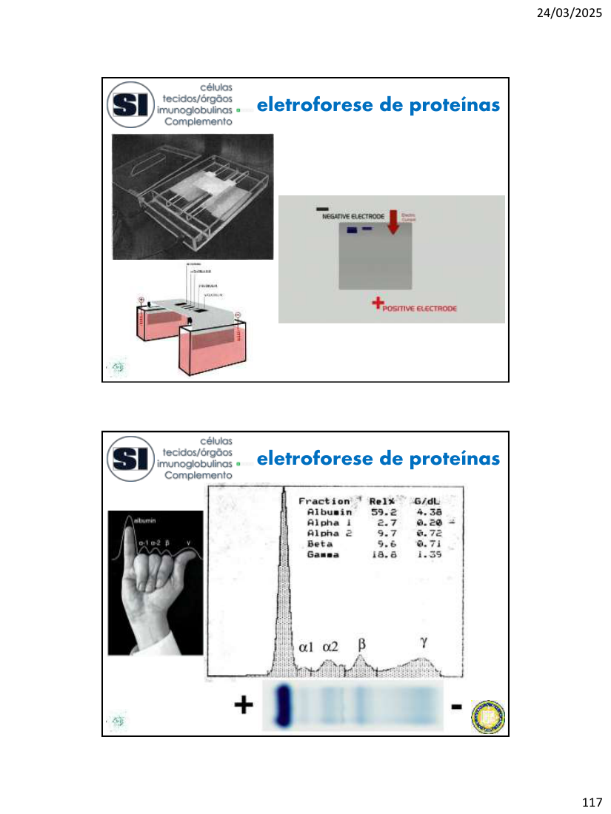
Eletroforese de proteínas — o teste que revela onde mora o anticorpo
A eletroforese de proteínas separa as proteínas do soro de acordo com carga elétrica e massa molecular. Funciona assim: na cuba eletroforética (dispositivo de acrílico com dois compartimentos) coloca-se solução-tampão e uma fita de nitrocelulose mergulhada nos dois lados. Dois eletrodos passam corrente elétrica do polo negativo para o positivo. Pinga-se uma gota de soro sobre a fita; as proteínas (que têm carga negativa) caminham do negativo para o positivo, separando-se conforme a massa (proteínas menores migram mais fácil) e a carga. Após cerca de uma hora e a coloração com corante, formam-se manchas; um densitômetro lê a intensidade de cada mancha e gera um gráfico de picos.
Da esquerda para a direita, o padrão normal é: albumina (o pico mais alto, porque é a proteína em maior quantidade no plasma/soro — produzida pelo fígado, faz carreamento de íons e moléculas) → alfa-1 globulina → alfa-2 globulina → beta-globulina → gama-globulina. Tudo o que não é albumina é globulina.
⚑ CAI NA PROVA — "Regra da mãozinha" e: anticorpo = gama-globulina
Para lembrar o padrão normal da eletroforese, o professor ensina a regra da mãozinha: olhe sua mão quase fechada — os "degraus" reproduzem a ordem albumina → alfa-1 → alfa-2 → beta → gama. A frase-chave de prova: os anticorpos estão nas gama-globulinas — anticorpo é gama-globulina, e gama-globulina (quando é anticorpo) é o mesmo que imunoglobulina. Cuidado com a pegadinha que o próprio aluno levantou: nem toda globulina é anticorpo — alfa-1, alfa-2 e beta-globulinas não são anticorpos (têm função metabólica/enzimática/constitutiva). Só a gama é imunoglobulina.
Quem é quem nas globulinas (eletroforese refinada)
Numa eletroforese mais detalhada, o professor identifica exemplos de cada fração:
- Alfa-1 globulinas: alfa-1-antitripsina (enzima cuja deficiência genética determina enfisema, sobretudo em fumantes).
- Alfa-2 globulinas: haptoglobina, ceruloplasmina.
- Beta-globulinas: transferrina (transporte de ferro); parte das beta também compõe estruturas como o MHC/HLA.
- Gama-globulinas: as imunoglobulinas, principalmente IgG e IgM. Na transição beta-gama aparece também a proteína C reativa (PCR).
⚑ CAI NA PROVA — PCR é gama-globulina, mas NÃO é anticorpo
Pegadinha clássica: a proteína C reativa (PCR) é uma gama-globulina, porém não é anticorpo. Ela é uma proteína de fase aguda, produzida pelo fígado em resposta a lesão/inflamação. O mecanismo: células inflamatórias produzem citocinas — em especial a interleucina-1 (IL-1) — que, ao passar pelo fígado, estimulam a produção de PCR ("proteína de reação"). Funcionalmente, a PCR atua como opsonina (facilitadora da fagocitose), a mesma função efetora que o anticorpo também exerce. Resumo para não cair na armadilha: toda PCR é gama-globulina, mas nem toda gama-globulina é anticorpo.
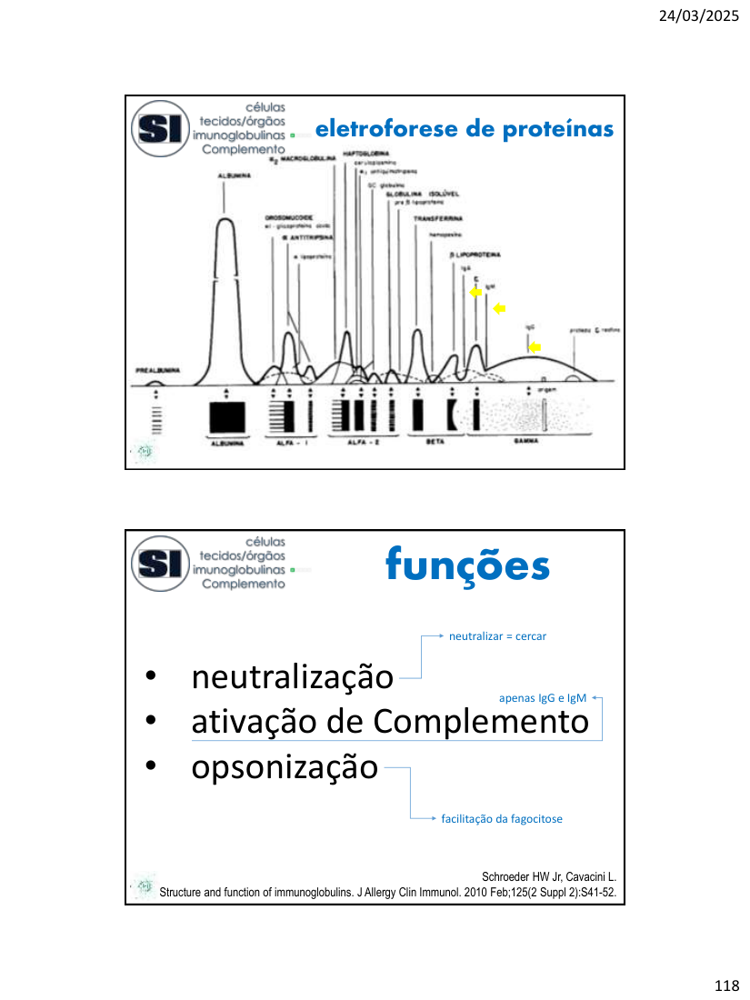
Interpretando alterações da eletroforese — padrões da fração gama
A eletroforese de proteínas não fecha diagnóstico, mas norteia o raciocínio clínico e o diagnóstico diferencial. Como o principal componente da gama é o anticorpo, observar a fração gama indica o estado da produção de imunoglobulinas. Três cenários:
- Pico policlonal (gama elevada e larga): resposta imune em curso — quadro infeccioso, doença autoimune (grandes quantidades de anticorpo) ou pós-vacinação (estímulo antigênico recente).
- Pico monoclonal (gama muito elevada, estreito e bem definido): proliferação neoplásica de uma única clone produtor de anticorpo. Pode ser linfoma de linfócitos B, ou tumor de plasmócitos = plasmocitoma (popularmente chamado de mieloma). Como há muitas células produtoras idênticas, a produção de anticorpo sobe a níveis "estratosféricos".
- Hipogamaglobulinemia (gama achatada, "flat"): pensar primeiro em imunossupressão — paciente em uso de antineoplásico (que tem ação imunossupressora) ou transplantado em uso de imunossupressor. Como anticorpo é proteína e proteína vem de gene, a redução acentuada sugere deficiência genética: as imunodeficiências que comprometem a produção de anticorpo são em sua maioria primárias. Exemplo citado: agamaglobulinemia de Bruton (mutação em gene que qualifica parte das imunoglobulinas, com mais de 600 mutações descritas). Imunodeficiência secundária (ex.: AIDS) reduz anticorpo, mas em geral não deixa a curva totalmente "flat".
Eletroforese × hemograma — por que pedir um sobre o outro
Um aluno perguntou se o hemograma traria as mesmas informações. Não. Em infecção, pós-vacinação e linfoma você pode ver leucocitose no hemograma — mas a célula aumentada não informa sobre produção de anticorpo nem sobre o comportamento da resposta imune. Há situações com linfócitos elevados e anticorpos baixos: na síndrome de DiGeorge (indivíduo sem timo), o linfócito sai da medula, não maturou no timo (ausente) e está elevado, mas a quantidade de anticorpo é baixa. Conclusão do professor: o hemograma é a triagem inicial; a eletroforese é um teste complementar, barato, que ajuda a restringir possibilidades — e, lamentavelmente, é pouco solicitado.
As três funções do anticorpo — e a ordem evolutiva
O anticorpo tem forma de Y. Suas três funções, na ordem em que o professor as hierarquiza:
- Neutralização = cercar. Vários anticorpos ligam-se ao antígeno por todos os lados, "cercando-o". Cercado, o antígeno (bactéria, toxina) "não faz mais nada". Esta é a função primária, "para a qual o anticorpo foi feito".
- Ativação do sistema complemento. Detalhada na aula de complemento. Importantíssimo: apenas IgG e IgM ativam o complemento.
- Opsonização = facilitar a fagocitose. O fagócito (neutrófilo, monócito, macrófago, célula dendrítica) tem receptores para a porção Fc do anticorpo; quando o anticorpo está sobre o antígeno, o englobamento fica muito mais fácil.
O professor diferencia neutralização (cercar — relação estática de "prender" o antígeno) de opsonização (processo dinâmico, intimamente ligado à fagocitose facilitada). E ressalta a relação causal: a neutralização gera a opsonização e gera a ativação de complemento, porque é o anticorpo já ligado ao antígeno que recruta o fagócito e o complemento.
⚑ CAI NA PROVA — Ordem evolutiva das funções
"Para que Deus fez o anticorpo? Para neutralizar." A neutralização é a função primária; ativação de complemento e opsonização são funções secundárias/tardias, adquiridas ao longo da evolução molecular. Em prova, se perguntarem a função original/fundamental do anticorpo, a resposta é neutralização (cercar), não opsonização nem complemento.
Estrutura molecular — Fab, Fc e domínios
As imunoglobulinas são proteínas heterodiméricas formadas por 2 cadeias pesadas + 2 cadeias leves idênticas, unidas por ligações dissulfeto. Possuem domínios variáveis (que ligam o antígeno) e domínios constantes (responsáveis pelas funções efetoras).[1][2] O fragmento Fab (Fragment Antigen Binding) corresponde à região variável de uma cadeia leve + uma pesada, formando um sítio de ligação ao antígeno; cada anticorpo tem 2 Fab (é bivalente). O fragmento Fc (Fragment Crystallizable) corresponde aos domínios constantes carboxiterminais das cadeias pesadas e medeia as funções efetoras via receptores Fc, FcRn e complemento.[1][4] A clivagem por papaína gera 2 Fab + 1 Fc; a pepsina gera um F(ab')₂ bivalente.
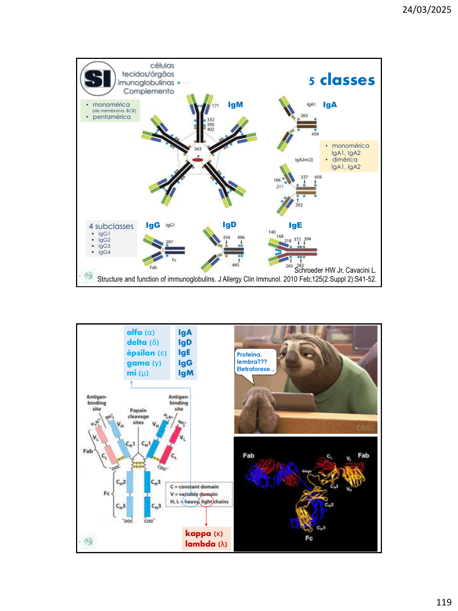
Anatomia do anticorpo — cadeias, domínios e regiões V/C
A unidade fundamental do anticorpo é formada por 4 cadeias proteicas: 2 leves e 2 pesadas, sempre iguais entre si (as duas leves idênticas; as duas pesadas idênticas). As cadeias pesadas (H, de heavy) são maiores e mais pesadas; as leves (L, de light) são menores. Cada cadeia se enovela em domínios (pedaços de proteína enovelados, geralmente com função).
A ponta de cada braço do Y é a região variável (letra V) — muda conforme o antígeno a ser reconhecido; é onde mora a especificidade. O restante é região constante (letra C) — igual entre anticorpos da mesma classe. Na ponta de ligação há um domínio VH (variável de cadeia pesada) + um VL (variável de cadeia leve). A região exata de contato com o antígeno chama-se parátopo (na porção Fab), e o ponto correspondente no antígeno é o determinante antigênico (epítopo).
⚑ CAI NA PROVA — Cadeias definem a classe; Fab e Fc (não confunda a origem dos nomes)
Pontos de cobrança que o professor isolou:
- Cadeias leves: κ (kappa) ou λ (lambda) — e as duas leves de um mesmo anticorpo são sempre do mesmo tipo.
- Cadeias pesadas definem a CLASSE: γ (gama) → IgG; μ (mi) → IgM; α (alfa) → IgA; δ (delta) → IgD; ε (épsilon) → IgE.
- Fab = Fragmento + Antigen Binding (liga o antígeno; 1 cadeia pesada + 1 leve por Fab). Fc = Fragmento + Cristalização (porque essas porções cristalizavam mais facilmente no experimento com papaína). O Fc é sempre formado por 2 cadeias pesadas.
Armadilha que o professor expôs: NÃO é "Fc de fixa complemento" nem "Fc por ordem alfabética depois de AB" — esses são erros que circulam em vídeos. O C vem de cristalização.
Região de dobradiça e a superfamília das imunoglobulinas
Entre o Fab e o Fc há a região de dobradiça (hinge), rica em pontes dissulfeto, que confere flexibilidade à molécula (o Y pode abrir mais ou menos para se amoldar ao antígeno). Foi exatamente nessa região que a papaína clivou a molécula.
A organização em domínios variáveis + constantes não é exclusiva do anticorpo. Moléculas como o TCR (receptor da célula T), o BCR (receptor da célula B) e o MHC/HLA de classe I e II compartilham essa arquitetura. Por isso foram agrupadas na superfamília das imunoglobulinas. Detalhe importante: o BCR é uma IgM monomérica de membrana — embora a IgM circulante seja pentamérica, na membrana do linfócito B ela aparece como monômero, funcionando como receptor.
As 5 classes em ordem de importância
São 5 classes. Em ordem alfabética: IgA, IgD, IgE, IgG, IgM. O professor pede a ordem de IMPORTÂNCIA (por abundância e relevância): IgG > IgM > IgA > IgE > IgD.
- IgG (pesada γ; leve κ ou λ): monômero. Presente no plasma (sanguíneo e tecidual) e no leite materno. É a Ig de resposta secundária / memória e marcadora de fase crônica. É a única que atravessa a placenta. Ativa complemento. Mãe transfere IgG ao feto; esse anticorpo é degradado entre 6 meses e 1 ano de vida.
- IgM (pesada μ): pentâmero (5 unidades Y unidas por uma peça J = 10 sítios de ligação → alta avidez, ideal para reduzir antigenemia). Marcadora de resposta primária / fase aguda. Não passa placenta, não está no leite. Ativa complemento.
- IgA (pesada α): monômero (no plasma) ou dímero (nas secreções). A forma dimérica tem peça J (unir os 2 monômeros) + peça secretora (transporte transcelular). É a principal Ig das mucosas e do leite materno (predomina sobre a IgG no leite). As tonsilas (parte do MALT) são reservatórios de linfócitos B que produzem esse "banho" de IgA — por isso devem ser preservadas ao máximo. Não ativa complemento.
- IgE (pesada ε): produzida em resposta a alérgenos e antígenos de helmintos. Liga-se a mastócitos, que degranulam liberando histamina (coceira, vasodilatação) — base da alergia / hipersensibilidade tipo I. Sempre em resposta secundária (não existe alergia de primeiro contato).
- IgD (pesada δ): a molécula mais "complexa" porque não tem função efetora bem definida; muitos estudos a associam à ativação do linfócito B. Não é produzida por switch de classe.
Propriedades das classes — confirmação por evidência
A IgG é a mais abundante do soro (>75%), com meia-vida ~21 dias e 4 subclasses (IgG1–4); medeia neutralização, opsonização e ADCC (IgG1/IgG3), ativa complemento (IgG1/IgG3) e atravessa a placenta.[2][4] A IgM é pentamérica (10 sítios), o melhor ativador do complemento, restrita ao compartimento vascular pelo tamanho e a primeira a surgir na resposta primária.[5] A IgA é a principal imunoglobulina das secreções mucosas (TGI, respiratório, geniturinário, leite), transportada pelo receptor poli-Ig.[5][6] A IgE liga FcεRI em mastócitos/basófilos, deflagrando hipersensibilidade tipo I e atuando na defesa antiparasitária.[7] A IgD atua sobretudo como BCR de membrana em linfócitos B naive.[2]
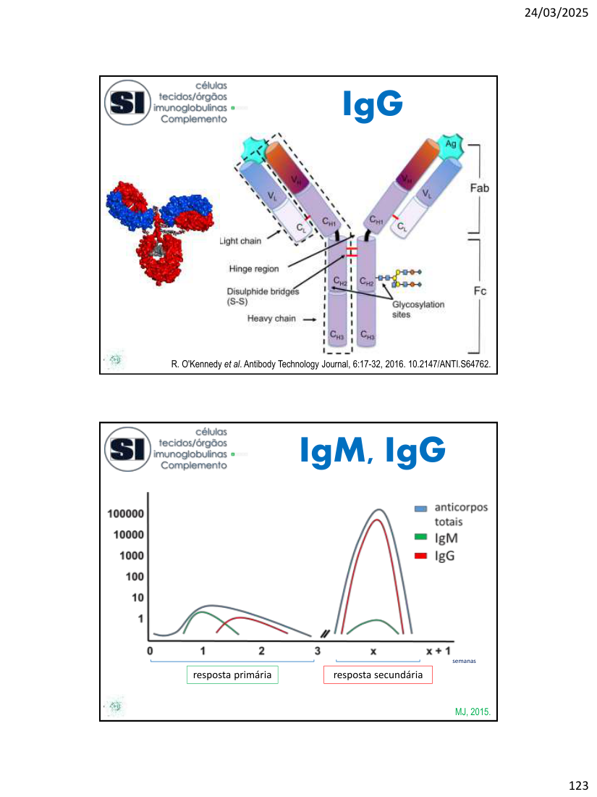
Switch de classe e cinética da resposta
O switch (troca) de classe é a capacidade do mesmo linfócito B de mudar a classe da imunoglobulina que produz. No primeiro contato com o antígeno, produz IgM; em contatos posteriores, o mesmo clone pode produzir IgG, IgA ou IgE. Isso caracteriza o linfócito B de memória. A IgD não é produzida por switch.
Na cinética: o primeiro contato gera IgM, que sobe, atinge o máximo e decresce, dando lugar à IgG. Na resposta secundária (segundo contato com o mesmo antígeno), produz-se pouca IgM e muito mais IgG, com resposta mais rápida e intensa. Regra que o professor frisou ao corrigir o próprio gráfico: a IgM sempre vem ANTES da IgG.
Exemplo clínico — sorologia em recém-nascido e a IgG materna
Cenário trazido pelo professor: gestante HIV positivo (ou com outra infecção). Como a IgG atravessa a placenta, o recém-nascido nasce com a IgG materna. Um teste sorológico (ELISA, que detecta anticorpo) no bebê pode dar positivo — mas essa positividade pode vir do anticorpo da mãe, não de infecção do próprio bebê. Por isso: testes sorológicos em recém-nascidos precisam ser repetidos após ~1 ano de vida (a IgG materna é degradada em 6 meses a 1 ano). Onde houver teste molecular disponível, ele resolve mais cedo; onde só há ELISA, espera-se o reteste — e, em doenças graves, inicia-se profilaxia/tratamento precocemente. Dado de apoio mostrado em tabela: a IgG do recém-nascido (~1.031 mg/dL) é muito próxima da do adulto (~1.150 mg/dL) justamente pela passagem placentária — diferente das demais imunoglobulinas.
Anticorpo como instrumento — diagnóstico e tratamento
Para fechar, dois papéis do anticorpo além da resposta imune:
- Diagnóstico: se há anticorpo específico no plasma, o antígeno "passou" pelo indivíduo. É o princípio do ELISA (ex.: diagnóstico de HIV) e da sorologia em geral.
- Tratamento: o anticorpo é hoje um biofármaco. Os anticorpos monoclonais são produzidos em laboratório para tratar câncer, doenças autoimunes e inflamatórias.
Conexões com outras aulas
Esta aula conecta-se diretamente com a próxima, sobre Sistema Complemento: lembre que apenas IgG e IgM ativam a via clássica do complemento — o anticorpo ligado ao antígeno é o gatilho. Conecta-se também com órgãos linfoides (tonsilas/MALT como fonte de IgA), com citocinas (IL-1 induzindo a PCR no fígado) e antecipa a aula de alergias/hipersensibilidade (IgE, mastócitos e histamina).
- Anticorpo é proteína secretada pelo linfócito B / plasmócito; "pesquisa", não "dosagem".
- PLASMA = com anticoagulante (Proteínas de coagulação Preservadas). SORO = Sem anticoagulante (coagulação consumiu os fatores). Coagulograma = PLASMA; sorologia = soro.
- Eletroforese de proteínas: albumina → α1 → α2 → β → γ (regra da mãozinha). Anticorpo = gama-globulina = imunoglobulina; α/β NÃO são anticorpos.
- Padrões da gama: policlonal (infecção/autoimune/vacina), monoclonal (mieloma/plasmocitoma/linfoma B), hipogama "flat" (imunossupressão / agamaglobulinemia de Bruton).
- PCR é gama-globulina mas NÃO é anticorpo; induzida por IL-1 no fígado; atua como opsonina.
- 3 funções: neutralização (cercar, primária) → ativação de complemento (só IgG e IgM) → opsonização (via receptor Fc).
- 4 cadeias (2 leves κ/λ + 2 pesadas); cadeia pesada define a classe (γ,μ,α,δ,ε). Fab liga antígeno (parátopo); Fc = cristalização, sempre 2 cadeias pesadas.
- Importância IgG>IgM>IgA>IgE>IgD. IgM pentâmero/primária; IgG monômero/secundária/placenta; IgA mono/dímero/mucosa; IgE alergia/mastócito; IgD sem função definida. IgM sempre antes de IgG.
Antígenos e Vias de Apresentação
Contexto e motivação — por que isto é a espinha dorsal da imunidade adaptativa
Toda a imunidade adaptativa começa com uma pergunta simples: como uma célula do sistema imune "enxerga" um invasor? A resposta está em duas palavras — antígeno e apresentação. Os linfócitos não reconhecem o micróbio inteiro; eles reconhecem pedacinhos dele. Entender quais pedacinhos, como eles são gerados e como são exibidos para as células T é o que permite compreender vacinas (por que a vacina da hepatite B é só o antígeno de superfície), transplantes (por que rejeitamos órgãos com HLA diferente) e infecções intracelulares (por que vírus precisam ser combatidos por uma via diferente das bactérias extracelulares).
Esta aula constrói esse raciocínio em camadas: primeiro os conceitos de antígeno, imunógeno, hapteno e epítopo; depois como o linfócito B difere do linfócito T no reconhecimento; e finalmente as duas vias de processamento e apresentação (MHC/HLA de classe I e II), terminando numa exceção fascinante — os superantígenos.
Definições fundamentais — antígeno × imunógeno × hapteno
Antígeno (Ag): qualquer molécula que possa ser reconhecida pelos elementos do sistema imune adaptativo — linfócitos T, linfócitos B ou ambos. Reconhecimento não significa, necessariamente, gerar resposta; significa apenas que existe um receptor capaz de se ligar àquela estrutura. Historicamente o termo nasceu como "gerador de anticorpos" (Von Behring e Kitasato, 1890), mas hoje a definição é mais ampla.
Imunógeno: é o antígeno que vai um passo além — além de ser reconhecido, ele ativa o linfócito, fazendo-o proliferar e se diferenciar em célula efetora (plasmócito que secreta anticorpo, ou linfócito T armado). Em outras palavras: todo imunógeno é antígeno, mas nem todo antígeno é imunógeno. Um imunógeno gera resposta imune; um antígeno apenas se liga ao receptor.
Hapteno: do grego haptein = "unir". É uma molécula pequena (medicamentos, polissacarídeos pequenos, substâncias químicas como o dinitrofenol/DNP) que sozinha não é imunogênica — não consegue ativar a resposta. Ela só vira imunógeno quando se acopla a uma proteína carreadora. O slide clássico mostra: Albumina sozinha → anticorpos; DNP sozinho → nenhum anticorpo; Albumina + DNP → anticorpos anti-DNP. Isso explica muitas alergias medicamentosas: vários medicamentos (a penicilina é o exemplo clássico da literatura) comportam-se como haptenos que se ligam a proteínas do hospedeiro e só então desencadeiam resposta.
Propriedades gerais de um bom imunógeno
O professor lista no slide as características que tornam uma molécula mais imunogênica:
- "No self" — distância filogenética: quanto mais evolutivamente distante de você for a estrutura, mais imunogênica. Por isso proteínas de bactérias são facilmente reconhecidas como estranhas.
- Peso molecular alto: entre 10.000 e 100.000 daltons. Moléculas muito pequenas (haptenos) não bastam.
- Configuração espacial / complexidade: a tridimensionalidade importa.
- Propriedade química: proteínas > polissacarídeos > lipídeos. A proteína é o imunógeno mais importante porque, ao ser processada, gera os peptídeos que ativam o linfócito T e organizam toda a resposta.
- Propriedade física: particulado > solúvel (estruturas particuladas são capturadas mais facilmente).
⚑ CAI NA PROVA — Por que a proteína é o imunógeno mais importante
O professor enfatiza: "o imunógeno proteico é o mais importante no planeta Terra". O raciocínio não é arbitrário — é porque só a proteína, ao ser processada em peptídeos, consegue ser apresentada via MHC e recrutar o linfócito T helper. Sem o T helper não há troca de classe de imunoglobulina, não há formação de memória, não há anticorpos de alta afinidade. Ou seja: a proteína é o único imunógeno capaz de gerar uma resposta adaptativa completa e com memória. Polissacarídeos e lipídeos ativam B de forma limitada (timo-independente, sem memória robusta).
Como o linfócito B reconhece o antígeno — direto e nativo
O linfócito B reconhece o imunógeno através de uma imunoglobulina de superfície, o BCR (B-Cell Receptor) — que é uma IgM ou IgD ancorada na membrana. Características desse reconhecimento (tabela do slide "Reconhecimento do Imunógeno"):
- Receptor: Ig de superfície (BCR).
- Natureza do que reconhece: diversa — polissacarídeos, lipídeos, LPS, haptenos acoplados, e proteínas. O B "enxerga" estruturas de qualquer natureza química.
- Localização do antígeno: solúvel ou na superfície de um organismo.
- Reconhecimento: nativo — o B reconhece o antígeno na sua forma tridimensional original, sem necessidade de processamento.
O B é monogâmico: aquele clone que reconheceu o epítopo prolifera e se diferencia em plasmócito, secretando anticorpos com a mesma especificidade do BCR que o ativou. O anticorpo então neutraliza o antígeno pelo mesmo epítopo.
Como o linfócito T reconhece o antígeno — processado e apresentado por MHC
O linfócito T é radicalmente diferente. Seu receptor é o TCR (T-Cell Receptor), formado por uma cadeia alfa e uma cadeia beta. Características:
- Natureza do que reconhece: apenas proteínas (peptídeos delas).
- Localização: o peptídeo precisa estar na superfície de outra célula, encaixado numa molécula de MHC (HLA).
- Reconhecimento: processado — o antígeno precisa ter sido fragmentado em peptídeos curtos antes de ser apresentado.
Os dois grandes tipos de T: o CD4+ (T helper, incluindo o T folicular helper) e o CD8+ (T citotóxico/citolítico). O TCR também é monogâmico e extremamente específico — veremos que a troca de um único aminoácido no peptídeo pode abolir o reconhecimento.
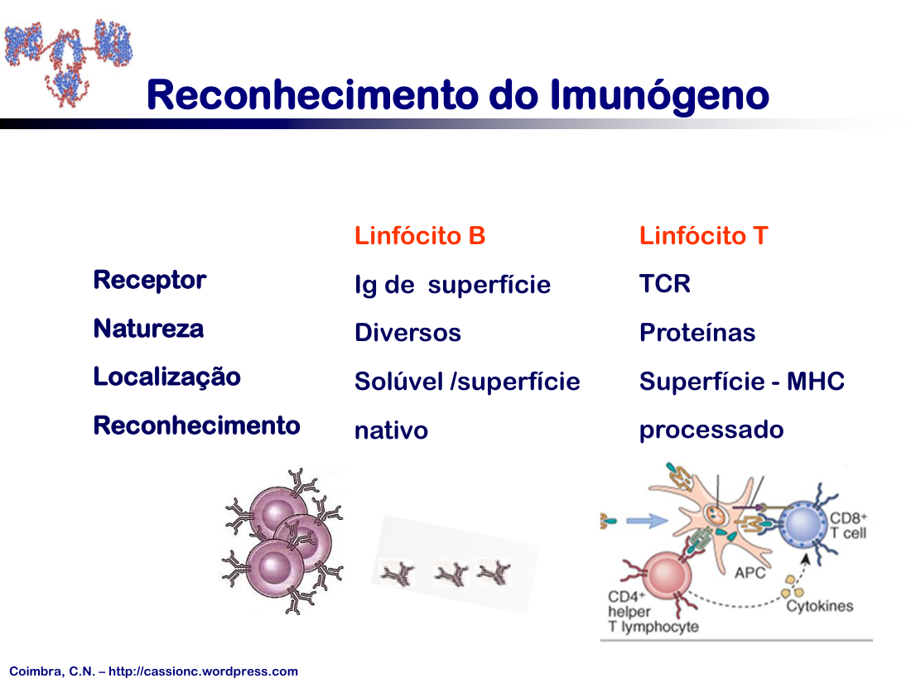
O que é REALMENTE um epítopo (determinante antigênico) — o exemplo do HBsAg
Epítopo ou determinante antigênico é a porção específica do antígeno que se liga ao receptor (BCR/anticorpo ou peptídeo-MHC/TCR). O professor desmonta a ideia simplista de que o epítopo é "a bolinha inteira" usando o antígeno de superfície do vírus da hepatite B (HBsAg).
O HBsAg não é o vírus inteiro nem uma bolinha homogênea. Dentro dele existe uma região chamada determinante "a", e dentro desse determinante "a" há três epítopos (determinantes antigênicos) distintos, definidos por conformações de sequências de aminoácidos específicas (o slide marca posições como 99, 107, 121–126, 131–141, 144–149...). A consequência clínica é poderosa:
- Por variabilidade genética, cada pessoa pode produzir anticorpo contra um, dois ou os três epítopos.
- São três oportunidades de montar uma resposta protetora contra o vírus.
- Se a pessoa não conseguir responder a nenhum dos três, fica vulnerável à infecção crônica.
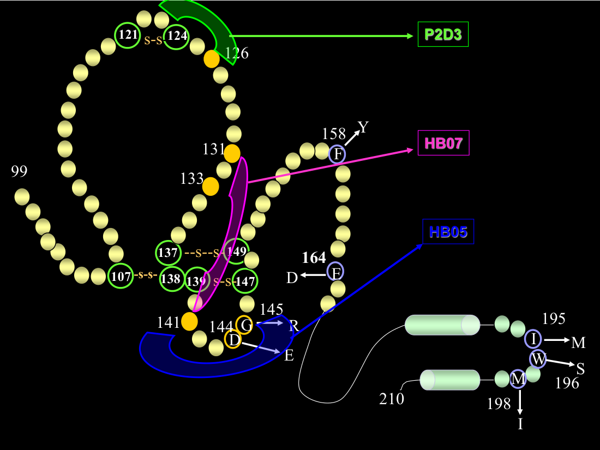
Antígenos timo-dependentes × timo-independentes — base imunológica
A divisão dos imunógenos em timo-dependentes e timo-independentes segue o modelo de dois sinais da ativação do linfócito B: o Sinal 1 é a ligação direta do antígeno ao BCR; a origem do Sinal 2 define o tipo de resposta.[3]
Nos antígenos timo-dependentes (TD), o Sinal 2 vem do linfócito T helper CD4+ cognato, que expressa CD154 (CD40L), o ligante do CD40 do linfócito B. São tipicamente proteínas, e geram troca de classe de imunoglobulina, anticorpos de alta afinidade e memória.[3]
Nos antígenos timo-independentes (TI), o B é ativado sem participação do T. São tipicamente polissacarídeos com epítopos repetitivos (TI-2) ou LPS de bactérias Gram-negativas (TI-1, com ação mitogênica). Induzem principalmente IgM e não geram memória robusta nem maturação de afinidade — fornecem resposta rápida, porém de menor qualidade e durabilidade.[3]
⚑ CAI NA PROVA — Tabela do reconhecimento B × T (decore-a)
O professor repete a tabela "Reconhecimento do Imunógeno" várias vezes na aula — é sinal de cobrança. O raciocínio para fixar: o B reconhece antígeno NATIVO, de natureza DIVERSA, solúvel ou de superfície, via Ig de superfície (BCR). O T reconhece antígeno PROCESSADO, apenas PROTEÍNAS, apresentado por MHC na superfície de outra célula, via TCR. A palavra-chave que separa os dois é processamento: o T obrigatoriamente precisa de antígeno processado e apresentado; o B, não.
MHC / HLA — a "vasilha" que apresenta o peptídeo
O MHC (Complexo Principal de Histocompatibilidade), chamado em humanos de HLA (Antígeno Leucocitário Humano), é a molécula que carrega o peptídeo processado até a superfície e o exibe ao TCR. Pontos centrais que o professor martela:
- O peptídeo precisa caber no sulco da molécula de MHC. O sulco aceita peptídeos de tamanhos variados (a analogia da aula: "a mesma pazinha recolhe o cocô do Golden, do Pastor Alemão e do Australiano" — tamanhos diferentes, mesmo sulco).
- O reconhecimento envolve contato físico direto: o TCR encosta tanto no peptídeo (epítopo) quanto na própria estrutura do MHC. As regiões determinantes de complementaridade (CDRs) do TCR fazem esse contato.
- O MHC/HLA é o local mais polimórfico do genoma humano. A variabilidade fica na "cabecinha" da molécula e nas paredes do sulco — os resíduos polimórficos.
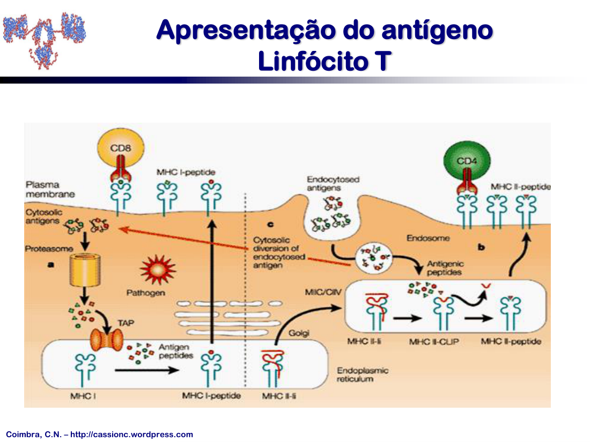
Reconhecer o "self": tolerância às próprias cores do HLA
O professor usa a analogia das cores dos times: imagine que o São-Paulino foi treinado no timo a tolerar vermelho, preto e branco; o Palmeirense a tolerar verde e branco. Se um São-Paulino recebe um coração palmeirense, ele tolera o branco (compartilhado), mas ataca o verde (estranho). Esse "treinamento das cores" é a tolerância central, que acontece no timo (órgão linfoide primário).
No timo só existem estruturas próprias (self) — não há micróbios. O linfócito T imaturo encosta nos HLA próprios e deve aprender a tolerá-los. Se ele reage forte demais ao self, é eliminado:
- Primeiro induz-se anergia (ausência de resposta);
- Se insistir na ativação, induz-se apoptose.
- Cerca de 95% dos timócitos morrem no timo; só ~5% saem para povoar os órgãos linfoides secundários.
O professor reforça: a ativação plena de uma célula T exige mais de um sinal — não basta a especificidade (Sinal 1). É preciso o sinal coestimulatório/citocina (Sinal 2) que sinaliza "há dano/há micróbio aqui". No timo, sem micróbios, esse Sinal 2 de perigo não existe — por isso reconhecer self ali não leva à ativação, e sim à tolerância.
HLA de classe I × classe II — estrutura, expressão e restrição
Duas classes de HLA, com diferenças que precisam estar cristalinas:
- HLA de classe I: tem uma única cadeia alfa associada à β2-microglobulina (a "bolinha" extra). É codificado por 6 genes (3 do pai + 3 da mãe — os loci HLA-A, -B, -C). Está expresso em todas as células nucleadas (exceção clássica: hemácias, que são anucleadas; e o professor menciona neurônios). Apresenta ao linfócito T CD8+.
- HLA de classe II: tem duas cadeias (alfa e beta — "duas perninhas"). É codificado por ~12 genes (metade do pai, metade da mãe — loci HLA-DP, -DQ, -DR; somando aos 6 do classe I, o professor fecha em 18 genes no total). Está expresso constitutivamente apenas nas células apresentadoras de antígeno (APCs) profissionais: macrófagos, células dendríticas e linfócitos B. Apresenta ao linfócito T CD4+.
A restrição (CD8 ↔ classe I; CD4 ↔ classe II) tem base estrutural: o CD8 é o correceptor que ancora na porção conservada da cadeia alfa do classe I; o CD4 ancora na porção conservada da cadeia do classe II. Sem essa âncora correta, a célula "fica bamba" e não acessa o epítopo. Por isso um CD8 não consegue ler um classe II, e vice-versa.
Resumo das duas vias clássicas (evidência)
As moléculas de MHC classe I apresentam produtos da degradação de proteínas intracelulares (endógenas) no citosol — principalmente produtos da proteólise pelo proteassoma — para linfócitos T CD8+. Os peptídeos são translocados para o retículo endoplasmático pelo transportador associado ao processamento de antígenos (TAP).[1]
As moléculas de MHC classe II exibem principalmente produtos da degradação lisossomal de antígenos exógenos para estimular linfócitos T CD4+. Antígenos exógenos são captados pela APC e levados ao sistema endo-lisossomal, onde são quebrados em peptídeos; o processo requer a chaperona HLA-DM (e, em linfócitos B, a HLA-DO).[1]
Via do HLA de classe II — antígeno EXÓGENO / vesicular (passo a passo)
Esta é a via dos antígenos que estão fora da célula (extracelulares): bactérias, vírus extracelulares, células mortas. O professor escolhe a célula dendrítica como exemplo. Sequência:
- Captura por endocitose/fagocitose: a APC engloba o antígeno → forma o fagossomo.
- Fusão com lisossomo → forma o fagolisossomo (vacúolo de digestão), repleto de espécies reativas de oxigênio (que matam o micróbio) e hidrolases (peptidases, lipases) que digerem o antígeno em peptídeos.
- Em paralelo, o HLA de classe II é produzido no retículo endoplasmático. Para impedir que ele pegue peptídeos errados no caminho, o sulco vem "tampado" por uma cadeia invariante, e o pedacinho que ocupa o sulco chama-se CLIP ("rolha"). O HLA-II tampado segue do RE para o Golgi (cis→trans), é empacotado em vesícula e viaja pela célula.
- Encontro e coalescência: a vesícula com HLA-II encontra o vacúolo de digestão; por serem da mesma natureza, fundem-se.
- Troca de peptídeo: no ambiente do vacúolo, a cadeia invariante e o CLIP são removidos, liberando o sulco. Os peptídeos digeridos competem pelo sulco — alguns encaixam, outros não.
- Exocitose e apresentação: o HLA-II carregado é exocitado e fica ancorado na membrana pela porção carboxiterminal, exibindo o epítopo ao CD4+.
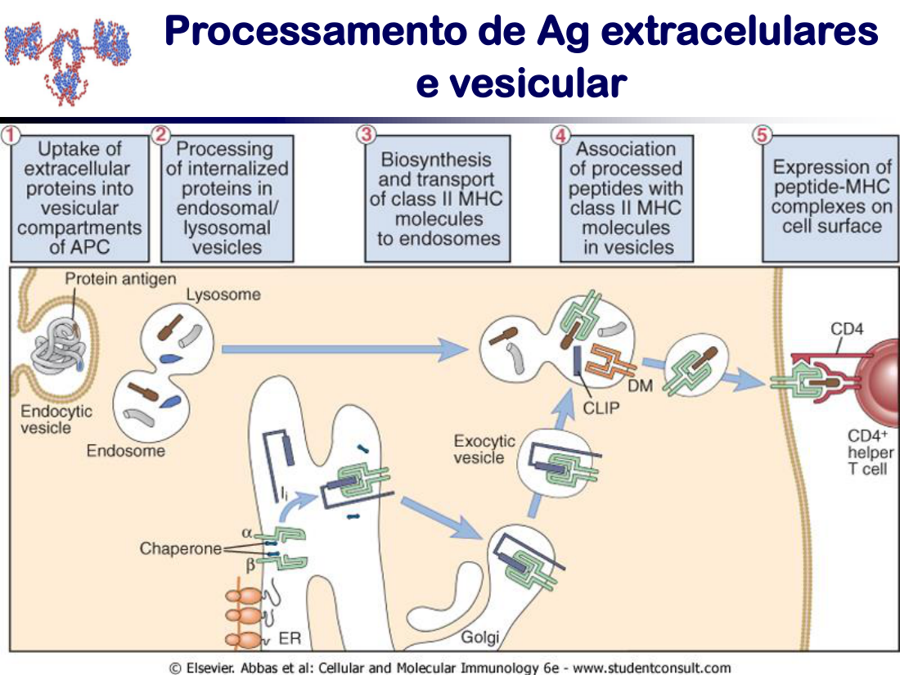
Via do HLA de classe I — antígeno ENDÓGENO / citosólico (passo a passo)
Esta é a via dos antígenos que estão dentro do citoplasma: proteínas virais (o vírus sequestrou a maquinaria celular), proteínas de células neoplásicas (mutadas/aberrantes), bactérias que escaparam do vacúolo, ou proteínas próprias velhas/defeituosas. Sequência:
- Marcação por ubiquitinação: a proteína-alvo é marcada com ubiquitina para degradação. Proteínas próprias funcionais são protegidas pelas chaperonas (que cobrem os sítios de ubiquitinação); quando a proteína própria fica defeituosa, as chaperonas soltam e ela pode ser ubiquitinada. Proteínas virais/bacterianas não têm essa proteção — são facilmente ubiquitinadas.
- Degradação no proteassoma: o "liquidificador intracitoplasmático" reconhece a marca de ubiquitina e quebra a proteína mecanicamente em peptídeos de ~8 a 11 aminoácidos.
- Transporte para o RE pelo TAP: os peptídeos são bombeados para dentro do retículo endoplasmático pelo TAP (proteína associada ao transporte do antígeno).
- A tapasina segura o HLA-I no TAP: o HLA de classe I é montado no RE e mantido acoplado ao TAP pela chaperona tapasina (estrutura vermelha do slide). Assim, quando o peptídeo entra, encaixa imediatamente — se o HLA-I estivesse solto, o peptídeo se perderia.
- Saída e apresentação: o HLA-I carregado deixa o RE → Golgi → membrana, onde apresenta o peptídeo ao CD8+, ancorado pela porção carboxiterminal.
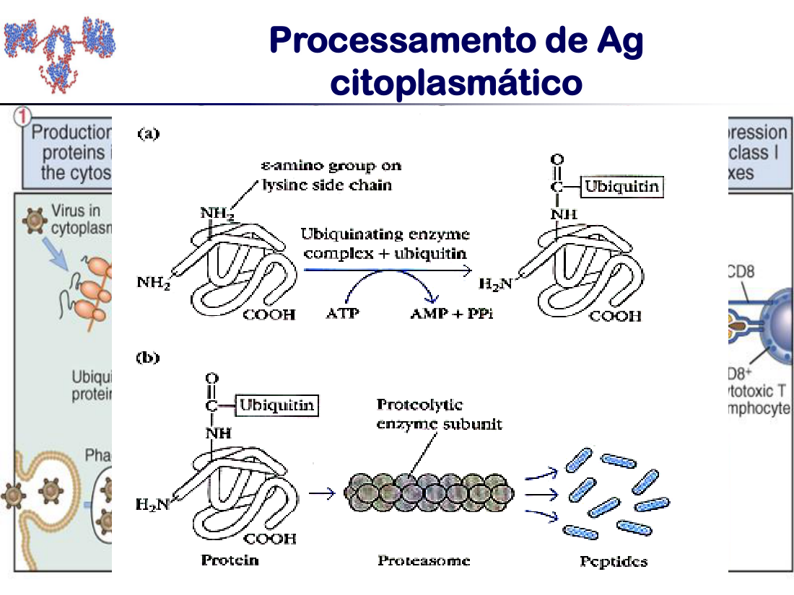
⚑ CAI NA PROVA — A pegadinha da tapasina e da via classe I
O professor diz explicitamente: "Tem que saber isso aqui... a pergunta vai ser essa." Ele monta um caso clínico: um paciente com defeito (mutação) na tapasina. Pergunta: qual célula NÃO terá resposta? Resposta: o linfócito T CD8+ (citotóxico/citolítico) — porque sem tapasina o HLA-I não é carregado e a via citosólica falha. As demais (CD4, B) continuam funcionando porque dependem da via classe II. A pegadinha é confundir a célula afetada: lembre-se TAP/tapasina/proteassoma = via classe I = CD8.
⚑ CAI NA PROVA — "HLA de classe I está em TODA célula nucleada" (não é pegadinha, é cobrança)
O professor avisa: "Isso aqui você tem que saber, é prova. A APC também tem classe I — não esqueça." O ponto de cobrança: classe I está em TODA célula nucleada, inclusive nas APCs profissionais (que, além do classe I, também têm classe II). Não caia na ideia errada de que APC "só tem classe II". E lembre da exceção: hemácia não tem classe I porque é anucleada. Qualquer célula nucleada = classe I.
Apresentação cruzada (cross-presentation) — a exceção da via classe I
A regra geral — classe I para antígeno endógeno, classe II para exógeno — tem uma exceção importante chamada apresentação cruzada (cross-presentation): certos subtipos de células dendríticas conseguem apresentar antígenos exógenos (captados por endocitose/fagocitose, como células mortas) em MHC de classe I para linfócitos T CD8+.[2]
Isso é essencial para iniciar respostas citotóxicas contra vírus que não infectam diretamente as DCs e contra tumores. A fagocitose de células mortas é um mecanismo eficiente de aquisição desses antígenos; proteínas de membrana estáveis são cross-apresentadas melhor que proteínas citosólicas solúveis e de meia-vida curta.[2] Quando a DC recebe sinais de ativação adequados, ocorre o cross-priming (ativação do CD8); sem esses sinais, ocorre cross-tolerização (inativação do CD8).[2] O professor menciona essa exceção no fim da aula: "a regra é classe I→CD8 e classe II→CD4, mas dá para fazer exceção".
Codominância e polimorfismo do HLA
Dois conceitos do slide "Expressão do HLA": (1) a expressão é codominante — tanto os alelos do pai quanto os da mãe são expressos, para classe I e classe II; (2) os genes do HLA são extremamente polimórficos, o local mais variável do genoma na população. Esse polimorfismo é adaptativo: garante que vírus diferentes, que geram peptídeos diferentes, possam ser encaixados em algum sulco de HLA. Por isso só irmãos gêmeos idênticos têm HLA totalmente igual — o que importa em transplantes.
Cooperação entre as vias num caso real (HBV)
O professor amarra tudo com um cenário: uma célula dendrítica captura o vírus da hepatite B, migra para o linfonodo e ali ativa simultaneamente o CD4 (pela via classe II) e o CD8 (pela via classe I — como o vírus foi captado de fora, isso corresponde à apresentação cruzada descrita acima). Os efetores então atuam:
- O CD8 sai e mata diretamente o hepatócito infectado que exibe o mesmo epítopo no seu classe I.
- O CD4 conversa com o macrófago e aumenta sua atividade intramicrobicida (ajuda a matar o que está dentro da vesícula). O que escapou da vesícula passa a ser tratado pela via classe I/CD8.
Superantígenos — a exceção da exceção
Na ativação canônica, um epítopo ativa um único (monoclonal) ou poucos (oligoclonal) clones de T helper — resposta controlada. Os superantígenos quebram essa regra.
O exemplo histórico: a TSST-1 (Toxina-1 da Síndrome do Choque Tóxico Estafilocócico), produzida por Staphylococcus aureus, ligada aos casos de choque em usuárias de absorvente interno nas décadas de 1970–80 (a trama absorvente embebida em sangue favorecia o crescimento bacteriano). Mecanismo:
- O superantígeno não é processado e apresentado no sulco. Ele se liga por fora, fazendo uma ponte entre a cadeia variável beta (Vβ) do TCR e a cadeia beta-1 do HLA de classe II.
- Com isso, ativa policlonalmente até ~10% de todos os linfócitos T helper, independentemente da especificidade.
- Resulta numa tempestade de citocinas (TNF-α, IL e outras pró-inflamatórias), levando ao choque.
Outros produtores de superantígenos: alguns Clostridium e Streptococcus. Relevância clínica atual: paciente queimado com pele colonizada por S. aureus produtor de TSST-1 pode evoluir para choque mesmo com antibiótico — é preciso pensar no superantígeno.
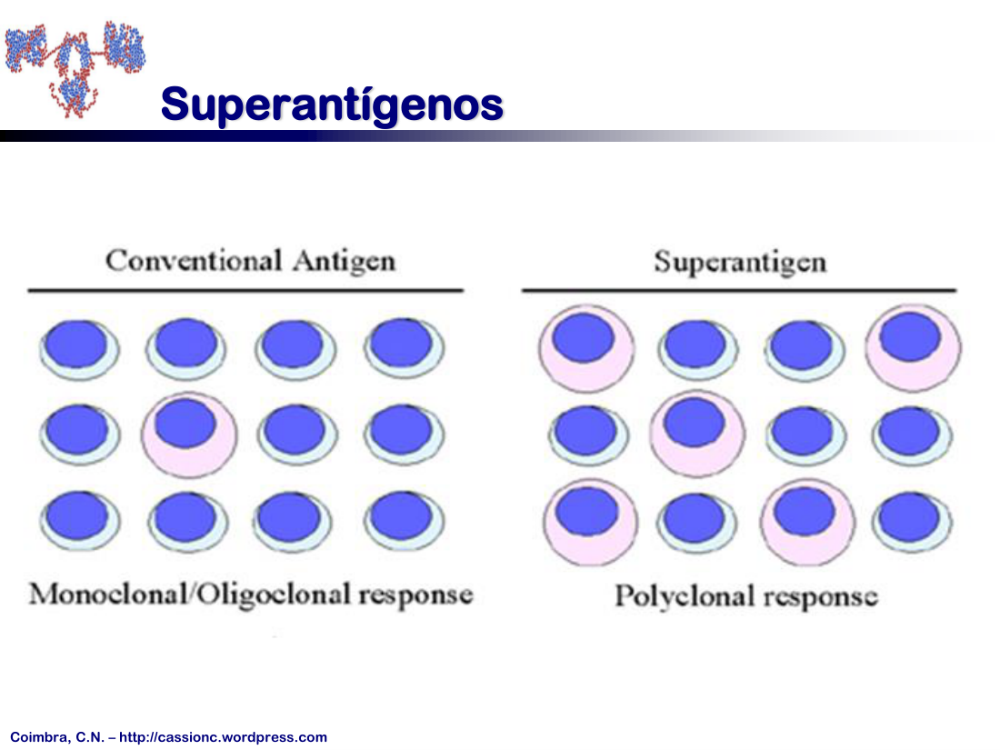
Nomenclatura do HLA — como ler um alelo
A nomenclatura do HLA é responsabilidade do Comitê de Nomenclatura da OMS para Fatores do Sistema HLA (que se reúne desde 1968). Cada alelo recebe um nome único com até quatro conjuntos de dígitos separados por dois-pontos: os dígitos antes do primeiro ":" descrevem o tipo (frequentemente o antígeno sorológico); o conjunto seguinte lista os subtipos.[4] Mais de 43.000 alelos HLA já foram nomeados (dezembro/2025), refletindo o caráter extremamente polimórfico desse locus que o professor enfatiza.[4]
Conexões com outras aulas
- Anticorpos/imunoglobulinas: o BCR é uma IgM/IgD de superfície; a fração Fab reconhece o epítopo, a fração Fc define a função efetora — base para entender a neutralização do HBsAg.
- Resposta inata e fagocitose: a via classe II começa com a fagocitose (macrófago/DC), conectando inata e adaptativa.
- LPS e toxinas: o LPS aparece aqui como ativador timo-independente do B; os superantígenos antecipam a aula de toxinas bacterianas.
- Hemocaterese / apoptose: a marcação de hemácias velhas e a externalização de fosfatidilserina (sinais "coma-me") são análogos didáticos da ubiquitinação intracelular.
- Interferon tipo I: aumenta a expressão de HLA-I, deixando a célula infectada mais suscetível ao CD8 — gancho com a próxima aula de citocinas.
- Antígeno é reconhecido; imunógeno é reconhecido E gera resposta (proliferação/diferenciação); hapteno é pequeno e só vira imunógeno acoplado a carreadora.
- Epítopo = porção que se liga ao receptor; o HBsAg tem 3 epítopos no determinante "a" (três chances de resposta).
- Linfócito B: BCR (Ig de superfície), reconhece antígeno NATIVO de natureza DIVERSA, sem processamento. Linfócito T: TCR, reconhece PROTEÍNA PROCESSADA apresentada por MHC.
- Timo-dependente (proteína, Sinal 2 do CD4, memória) × timo-independente (polissacarídeo/LPS, sem T, IgM, sem memória).
- HLA classe I: 1 cadeia α + β2-microglobulina, TODA célula nucleada, via ENDÓGENA (proteassoma→TAP→tapasina→RE), apresenta ao CD8.
- HLA classe II: α+β, só APCs profissionais (macrófago, DC, B), via EXÓGENA (fagolisossomo, CLIP/cadeia invariante, HLA-DM), apresenta ao CD4.
- Cross-presentation: DCs apresentam antígeno exógeno em classe I ao CD8 (exceção à regra).
- Superantígeno (TSST-1): ponte Vβ do TCR ↔ β1 do classe II, ativa ~10% dos T helper policlonalmente → tempestade de citocinas → choque.
Citocinas na Resposta Imune Inata — Propriedades Gerais, TNF, IL-1, IL-6 e Interferon Tipo I
Contexto e motivação — citocinas são as "palavras" do sistema imune
O sistema imunológico é um conjunto de células, tecidos, órgãos e produtos celulares que dão uma resposta coletiva. Para que essa resposta seja coordenada, essas peças precisam conversar entre si. Elas fazem isso por meio de glicoproteínas chamadas citocinas — pense nelas como as palavras do sistema imune. Quando a célula dendrítica reconhece um invasor lá na periferia, é por meio de citocinas que ela informa aos linfócitos que existe um invasor e, mais do que isso, qual é o comportamento desse invasor (intracelular como um vírus, extracelular como um helminto, etc.). É por isso que entender citocina é entender como toda a defesa é orquestrada.
Esta é a primeira aula de citocinas, então antes de falar das citocinas específicas da resposta inata, precisamos firmar dois alicerces: (1) por que a nomenclatura das citocinas é traiçoeira e (2) as propriedades gerais (os mecanismos de ação) que valem para todas elas.
⚑ CAI NA PROVA — O nome da citocina NÃO descreve a função
O grande viés é tentar vincular o nome ao fenômeno biológico. Interleucina significa "substância secretada por leucócito que age sobre leucócito" (batismo de 1979, no experimento de Mizel & Farrar). Mas a IL-1 é secretada por endotélio vascular, tecido adiposo e fibroblasto — que não são leucócitos. TNF (fator de necrose tumoral) recebeu esse nome de oncologistas que injetavam altas doses em tumores de ratos e viam necrose — mas o TNF NÃO induz necrose diretamente: ele induz apoptose (via extrínseca) ou inflamação; a necrose vista era secundária à trombose (inibição de trombomodulina → trombo → isquemia → necrose). Interferon recebeu o nome de virologistas ("interfere" com infecções virais). Pegadinha clássica de prova: afirmar que "TNF é o fator que induz necrose em tumor". Não decore pelo nome.
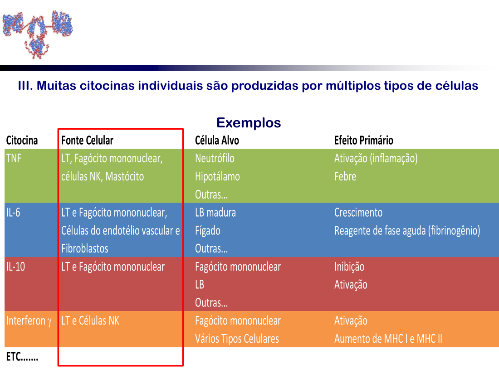
Definição e cinética — citocina é um sinal BREVE e autolimitado
Citocina: glicoproteína não-antígeno-específica que medeia e regula as respostas imunes inata e adaptativa, atuando na inflamação, crescimento/diferenciação celular, angiogênese, hematopoese e quimiotaxia. Diferente de hormônio (que é produzido por célula especializada e armazenado em grânulos, como a insulina), a citocina não é estocada: ela é produzida e jogada fora. A secreção é um evento breve e autolimitado — o RNA mensageiro tem cauda poli-A curta, então é degradado rapidamente, garantindo um efeito de curta duração.
Por que isso importa? Porque a inflamação tem que ser ligada e desligada a tempo, senão lesiona o próprio tecido. Junto com a citocina pró-inflamatória, já são produzidos subprodutos que limitam sua ação — analogia com a acetilcolina e a acetilcolinesterase: o freio chega quase junto com o acelerador. Quem "ganha" depende da concentração: estímulo grande → predomina a pró-inflamatória; estímulo cai → predomina o freio que elimina a citocina.
Modos de ação — autócrino, parácrino, endócrino (e o "intrácrino")
A citocina inicia sua ação ligando-se a receptores específicos na superfície da célula-alvo (muitos receptores compartilham subunidades entre si). Os modos de ação são:
- Autócrino: age na mesma célula que a produziu (ex.: a IL-2 secretada pelo linfócito T age sobre ele mesmo).
- Parácrino: age numa célula vizinha.
- Endócrino / sistêmico: quando a concentração fica muito alta, age à distância em órgãos-alvo (ex.: hipotálamo, fígado).
O professor cita também um mecanismo especulativo, ainda não consolidado na literatura, chamado intrácrino — a hipótese de que a citocina nem precisaria sair da célula, agindo em receptores citoplasmáticos. Isso é apenas curiosidade de fronteira, não está em livro.
⚑ CAI NA PROVA — As 4 propriedades-chave: PLEIOTROPISMO, REDUNDÂNCIA, SINERGIA, ANTAGONISMO
Estas quatro definições são cobradas com precisão. O professor frisa que muita gente usa "pleiotropismo" errado. Decore a definição EXATA de cada uma:
- Pleiotropismo: UMA citocina age em VÁRIAS células diferentes. (Cuidado: o fato de ela ter múltiplos efeitos sobre uma alvo é outra propriedade; pleiotropismo é estritamente "agir em várias células".)
- Redundância: VÁRIAS citocinas diferentes fazem o MESMO efeito numa célula (ex.: IL-2, IL-4 e IL-5 todas proliferam o linfócito B; TNF, IL-1 e IL-6 fazem quase tudo igual na inflamação aguda).
- Sinergia (sinergismo): AMPLIFICAÇÃO de um processo — duas citocinas juntas produzem um efeito MAIOR (super-expressão). Ex.: TNF + IFN juntos super-regulam o HLA de classe I.
- Antagonismo: uma citocina quer um processo, a outra quer o INVERSO. Ex.: IFN-γ ativa o macrófago × IL-10 inibe o macrófago. Quem ganha? A que estiver em MAIOR concentração (limitada pela saturação dos receptores).
Pegadinha frequente: confundir redundância (mesmo efeito, mesma intensidade) com sinergia (efeito amplificado). Na redundância, ter uma, duas ou três citocinas dá a mesma intensidade; na sinergia, juntas elas super-expressam.
O que a evidência diz sobre TNF, IL-1 e IL-6 na inata
IL-1β, IL-6 e TNF-α estão entre as primeiras citocinas pró-inflamatórias produzidas e possuem funções pleiotrópicas, orquestrando a inflamação aguda local e, em casos graves, sistêmica.[1] A IL-1β é considerada um "regulador-mestre" da imunidade inata e é capaz de induzir outras citocinas, como a própria IL-6, além de moléculas de adesão que promovem o contato célula–célula e a migração transendotelial de células inflamatórias.[1] Esse comportamento corrobora a ideia de redundância e sinergia ensinada na aula: o sinal de uma citocina alimenta a produção da seguinte.
Os PRRs / TLRs — os "alarmes celulares" que disparam as citocinas
Toda célula inata carrega PRRs (receptores de reconhecimento de padrões), que funcionam como alarmes. Eles reconhecem PAMPs (padrões moleculares de patógenos) e DAMPs (padrões de dano). Os principais:
- TLRs (Toll-like receptors): reconhecem o invasor tanto fora quanto dentro da célula.
- NOD: reconhece peptidoglicano (de bactérias intracelulares/intracitoplasmáticas).
- RIG: reconhece RNA viral intracelular.
Quando um PRR é acionado, ocorre transdução de sinal e nasce um grupo de citocinas. No caso do macrófago que fagocita uma bactéria via TLR, surge o TNF — a citocina-mestra da inflamação aguda. As fontes do TNF: macrófago (via TLRs), linfócito T, célula NK e mastócito.
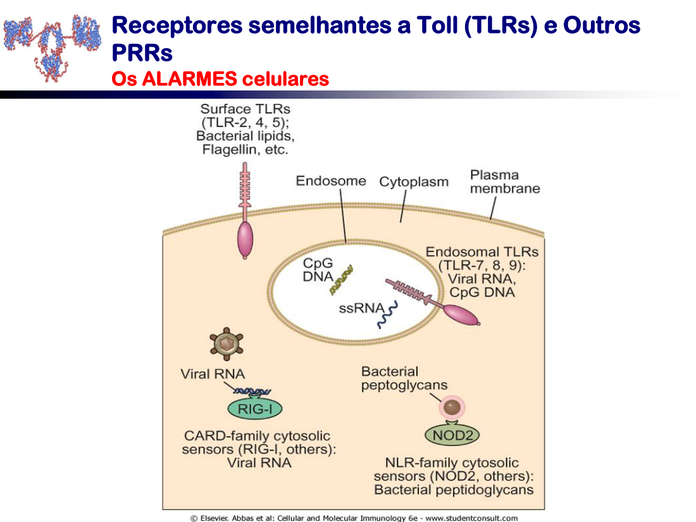
Fisiopatologia passo a passo — Contexto 1: inflamação aguda LOCAL
Cenário: uma pequena abrasão na pele permite a entrada de Staphylococcus aureus num folículo com microcirculação. Acompanhe a cascata:
- O macrófago adjacente encosta nos PAMPs do S. aureus via TLR → liga os genes do TNF e da IL-1.
- TNF e IL-1 grudam nas células do endotélio vascular (que têm receptor) → aumento das adesinas endoteliais (selectinas e integrinas).
- TNF (principalmente) + IL-1 promovem relaxamento do tônus da musculatura lisa vascular → vasodilatação e aumento da permeabilidade vascular. Perde-se plasma; o eritrócito vai para o centro do vaso e os leucócitos passam a marginar.
- O endotélio, estimulado, secreta fatores quimiotáticos — como a IL-8 (quimiocina) — que recrutam o neutrófilo (porque é infecção bacteriana). O endotélio também secreta IL-6: agora temos a tríade completa TNF + IL-1 + IL-6.
- Diapedese: a selectina freia o neutrófilo (rolamento), a integrina o para, e a PECAM-1 (CD31) o joga para o tecido.
- O neutrófilo segue o gradiente quimiotático até o S. aureus. O TNF hiperativa o neutrófilo (como uma "droga estimulante"): ele produz tantas espécies reativas de oxigênio que não consegue se desintoxicar (supera superóxido-dismutase e peroxidase) e acaba morrendo — formando o exsudato/pus.
- Resolução: o macrófago induz depósito de colágeno, coagulação e reparo (cicatrização).
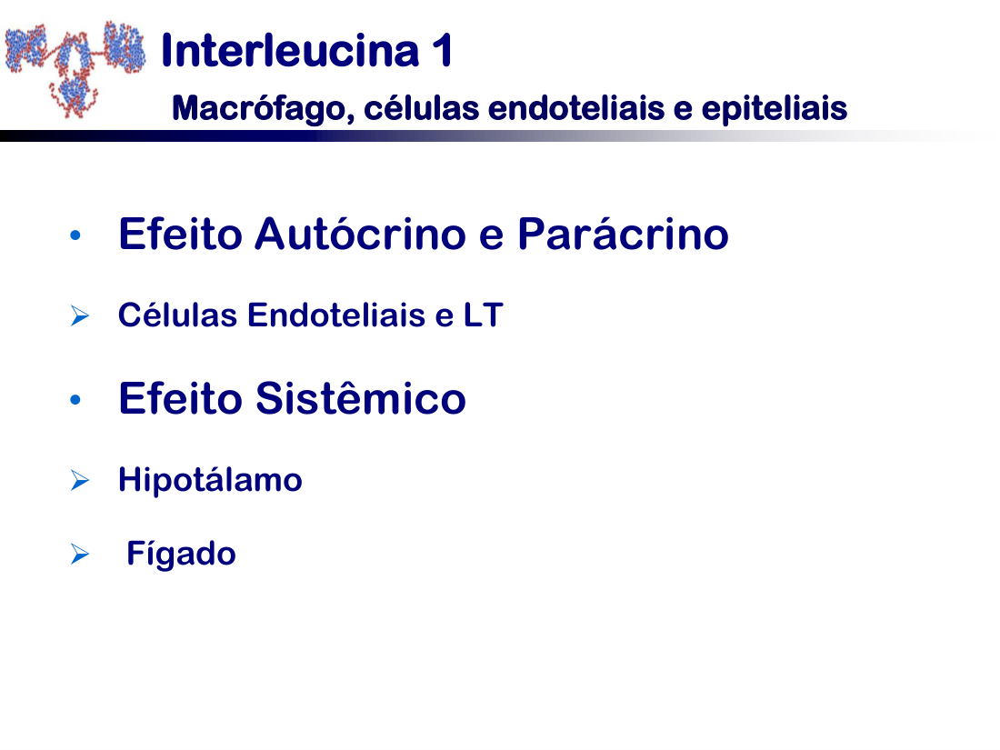
Contexto 2: efeitos SISTÊMICOS protetores — febre e proteínas de fase aguda
Cenário: faringoamigdalite infantil por Streptococcus pyogenes, com pontos de pus nas tonsilas. Toda a cascata local acontece, mas agora as citocinas aumentam tanto em concentração que deixam de ter ação apenas autócrina/parácrina e passam a ter efeitos sistêmicos (a criança com 39 °C no sofá).
Febre — pirógenos endógenos: TNF, IL-1 e IL-6 são pirógenos endógenos (diferente dos exógenos, como o LPS). Eles agem nas células hipotalâmicas, aumentam a prostaglandina e elevam a temperatura. A febre acelera as reações e a produção de células; para vírus é particularmente deletéria (inibe a replicação viral).
Proteínas de fase aguda (induzidas no fígado/hepatócito):
- Induzidas por TNF + IL-1: proteína amiloide A (sérica, pró-inflamatória, favorece a fagocitose) e fibrinogênio (importante na coagulação/reparo dos vasos).
- Induzida pela IL-6: proteína C reativa (PCR) — esta é a exceção que diferencia a IL-6.
Também há amplificação da hematopoese: em infecção bacteriana, há "desvio à esquerda" (neutrófilos e células jovens); em infecção viral, aumentam os linfócitos.
⚑ CAI NA PROVA — A PCR é a proteína de fase aguda da IL-6 (e é opsonina INESPECÍFICA)
O professor afirma literalmente: "Qual é a proteína de fase aguda da IL-6? Vai cair na prova. É a PCR. Tem que saber, é essa que eu vou pedir." Dois pontos cobrados: (1) IL-6 → PCR (enquanto TNF+IL-1 → amiloide A + fibrinogênio); (2) a PCR não é só marcador inflamatório — ela é um agente opsonizante inespecífico (facilita a fagocitose ligando-se a açúcares de superfície de bactérias capsuladas, como o "açúcar de confeiteiro" sobre o bolo). Não confundir com as opsoninas C3b (também inespecífica) e a opsonina específica IgG (que só existe na resposta adaptativa).
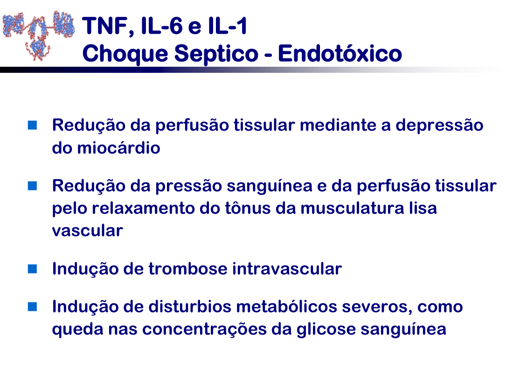
Contexto 3: efeitos DELETÉRIOS sistêmicos — o CHOQUE SÉPTICO / ENDOTÓXICO
Cenário: idoso imunossenescente, internado na UTI pós-infarto, desenvolve foco infeccioso por Klebsiella pneumoniae (KPC, Gram-negativa, produtora de LPS — endotoxina). Como o tratamento não controla a bactéria, as concentrações de TNF, IL-1 e IL-6 sobem muito, gerando efeitos patológicos sistêmicos:
- Depressão miocárdica: TNF muito elevado reduz a contratilidade cardíaca → queda do débito cardíaco → redução da perfusão tissular.
- Hipotensão/choque: vasodilatação + aumento da permeabilidade vascular generalizados → queda da pressão arterial.
- Trombose intravascular: altas doses de TNF inibem a trombomodulina (anticoagulante) e induzem fator tecidual pró-coagulante → trombos → pode evoluir para CIVD (coagulação intravascular disseminada). Imagem clínica: recém-nascido com sífilis congênita com necrose das pontas dos dedos.
- Distúrbio metabólico severo / caquexia: queda da glicose sanguínea, depleção das reservas hepáticas, atrofia de adipócitos e, depois, do músculo esquelético (desgaste em ~72 h).
Nomenclatura correta (pós-1994): o quadro é SEPSE = "mia" (bacteremia/viremia/fungemia) + SIRS (Síndrome da Resposta Inflamatória Sistêmica). O choque dela é o choque séptico ou endotóxico (endotóxico porque há endotoxina/LPS no jogo). O termo "septicemia" foi abandonado por ser ambíguo.
TNF como mediador central do choque séptico
As citocinas são reguladoras pleiotrópicas com papel central na fisiopatologia da sepse; o desequilíbrio da rede inflamatória leva a dano tecidual, falência de órgãos e morte.[2] O TNF-α é considerado mediador central e suficiente do choque séptico: está presente em modelos experimentais e em pacientes, é capaz de desencadear todo o espectro de sequelas hemodinâmicas, metabólicas e patológicas, e sua neutralização previne o choque induzido por endotoxina ou bacteremia.[2] Coerente com a cinética ensinada (sinal breve), o TNF é secretado em minutos após a infecção e cai após 3–4 horas, tornando-se quase indetectável no soro.[2]
Importante para a prática (e para o paradoxo do pleiotropismo levantado em aula): ensaios clínicos de bloqueio de TNF na sepse produziram efeitos modestos, mostrando que neutralizar uma única citocina dessa rede redundante raramente resolve o quadro.[2]
IL-6, hepatócito e proteínas de fase aguda
A IL-6 é o principal regulador da síntese de proteínas de fase aguda nos hepatócitos humanos adultos; entre as mais induzidas estão a proteína C reativa (PCR), a amiloide sérica A (SAA), a haptoglobina e o fibrinogênio.[3] No fígado, a IL-6 é indutora-chave da resposta de fase aguda e da defesa contra infecção, além de ser um potente mitógeno hepatocitário.[3] Várias dessas proteínas de fase aguda integram o sistema complemento e a cascata de coagulação, conectando a sinalização por citocina à imunidade inata humoral.[3]
Interferon tipo I (IFN-α/β) — o antiviral da inata
O interferon tipo I abrange todos os interferons exceto o gama: IFN-α, IFN-β, IFN-ε... O mais importante (e o usado como medicamento, ex.: hepatites B e C crônicas) é o IFN-α. Fontes: macrófagos e fibroblastos. Tem dois mecanismos de ação:
- Na célula JÁ infectada (ação autócrina): o RNA viral aciona um TLR intracelular → transdução de sinal → o hepatócito infectado produz IFN-α que age sobre si mesmo, aumentando a expressão de HLA de classe I. Isso aumenta a apresentação de antígeno e a suscetibilidade ao linfócito T CD8 (CTL, citotóxico), que reconhece o mesmo epítopo e induz apoptose da célula infectada.
- Na célula vizinha NÃO infectada (ação parácrina): o IFN-α a coloca num estado antiviral, induzindo enzimas antivirais (ex.: 2'-5'-oligoadenilato sintetase, PKR). Quando o vírus tentar entrar, a célula é suscetível à infecção mas não permissiva à replicação — o RNA viral é degradado.
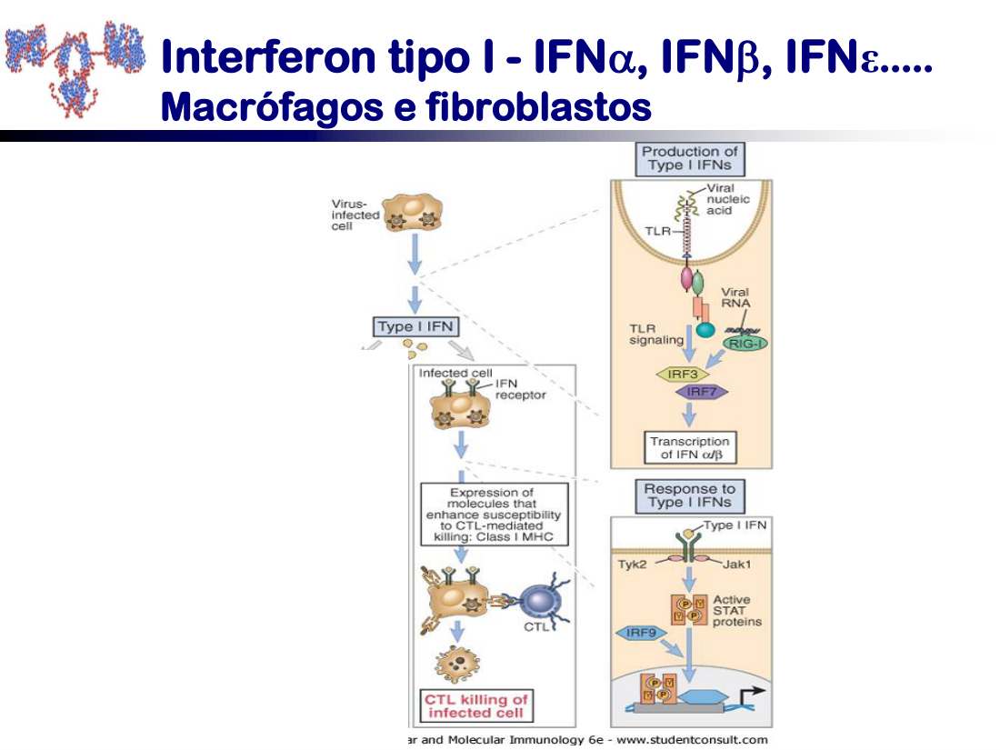
Mecanismo antiviral do interferon tipo I
Os interferons tipo I (IFN-α e IFN-β) são secretados por diversas células após a infecção e atuam por sinalização autócrina e parácrina via receptores específicos.[4] O retorno do IFN-I sobre a célula infectada e sobre as células vizinhas induz os genes estimulados por interferon (ISGs), que bloqueiam o ciclo de replicação viral, induzem apoptose das células infectadas (favorecendo a apresentação cruzada de antígeno) e amplificam a função efetora de células dendríticas, B e T para resolver a infecção.[4] Camundongos sem o receptor de IFN-I (IFNAR) têm clearance viral substancialmente reduzido, confirmando o papel central dessa via na defesa antiviral.[4]
Conexões — a IL-1 como ELO entre a inata e a adaptativa
A IL-1 é o elo entre a resposta imune inata e a adaptativa. No experimento original de 1979 (e confirmado depois por biologia molecular), o sinal funciona como dois cliques: o linfócito T precisa (1) ser específico via TCR para o antígeno apresentado E (2) receber o sinal da IL-1 dizendo "é bicho / é neoplásico". Só com os dois sinais o linfócito sai de G0→G1 e passa a produzir IL-2, que age de forma autócrina levando à fase S e à mitose (proliferação clonal). Sem a IL-1, o linfócito específico é induzido à apoptose — exatamente o que ocorre na seleção clonal negativa no timo, onde não há "bicho" (sem IL-1), e os clones autorreativos morrem. Isso conecta esta aula às de resposta inata (PRRs, complemento/opsoninas) e às próximas, sobre resposta adaptativa (Th1/Th2/Th17, IFN tipo II).
- Citocinas são glicoproteínas (as "palavras" do sistema imune); o nome NÃO descreve a função (interleucina, TNF, interferon foram mal batizados).
- Secreção breve e autolimitada (mRNA de cauda curta); agem por receptor de modo autócrino, parácrino ou endócrino/sistêmico.
- Quatro propriedades: PLEIOTROPISMO (1 citocina → várias células), REDUNDÂNCIA (várias citocinas → mesmo efeito), SINERGIA (amplificação), ANTAGONISMO (efeitos opostos; vence a mais concentrada).
- PRRs/TLRs (NOD, RIG) são os "alarmes" que reconhecem PAMPs/DAMPs e disparam as citocinas.
- Tríade da inflamação aguda = TNF + IL-1 + IL-6 (redundância). Local: adesinas, vasodilatação, quimiotaxia (IL-8), diapedese de neutrófilo, ERO, pus.
- Sistêmico protetor: febre (pirógenos endógenos no hipotálamo) e fase aguda no fígado — TNF+IL-1 → amiloide A e fibrinogênio; IL-6 → PCR (opsonina inespecífica).
- Sistêmico deletério: choque séptico/endotóxico = depressão miocárdica + hipotensão + trombose (CIVD) + hipoglicemia/caquexia. Termo correto: SEPSE = mia + SIRS.
- IFN tipo I (IFN-α/β, de macrófagos/fibroblastos): autócrino aumenta HLA-I na célula infectada (suscetibilidade ao CD8); parácrino põe a vizinha em estado antiviral. IL-1 é o ELO inata→adaptativa.
Citocinas na Resposta Imune Adaptativa — Polarização do T Helper
Contexto e motivação — o elo entre o invasor e a resposta certa
Na aula anterior você viu as citocinas da imunidade inata (TNF, IL-1, IL-6, interferons do tipo I) — os "alarmes celulares" que disparam a inflamação imediata. Esta aula é o capítulo seguinte: o que acontece quando a célula dendrítica, depois de fagocitar o invasor na periferia, perde a adesividade ao tecido, cai num vaso linfático e migra até o linfonodo adjacente para conversar com os linfócitos. É aqui que se decide o tipo de resposta adaptativa.
A pergunta central é prática: por que um mesmo paciente responde de forma brilhante a uma micobactéria e de forma desastrosa a outra? Por que a sífilis terciária e a hanseníase virchowiana "respondem errado"? A resposta está na polarização do linfócito T helper — e quem dirige essa polarização são as citocinas. Errar a polarização é errar a guerra inteira.
Definições — o ponto de partida: o TH0 e a cooperação celular
Linfócito T helper (CD4+): linfócito que coordena a resposta adaptativa. Ele só sai da condição de "virgem" (naive) através da cooperação celular com uma célula apresentadora de antígeno — e a única capaz de ativar um T helper virgem é a célula dendrítica, apresentando o antígeno pela via do HLA de classe II (diferente do CD8+, que reconhece HLA de classe I).
TH0: o T helper recém-ativado, ainda indiferenciado. Dependendo do "recado" que recebe da célula dendrítica sobre o comportamento do invasor, ele se subtipa em TH1, TH2, TH17 ou Treg. Diferenciar uma célula é, na prática, ligar e desligar genes: toda célula carrega o genoma inteiro, mas cada identidade existe porque expressa um conjunto diferente de genes.
Linfócito T folicular helper (Tfh): a "versão" do T helper que, em vez de sair para a periferia, migra para o folículo para conversar com o linfócito B. Ponto importante do professor: Tfh e Th da mesma linhagem produzem as MESMAS citocinas (Tfh1 = IFN-γ, Tfh2 = IL-4, etc.). O Tfh é quem promove o switch de classe de anticorpo, a maturação de afinidade, os plasmócitos de vida longa e as células de memória.
Mecanismo passo a passo — a célula dendrítica grita "estamos sendo atacados"
O fluxo é sempre o mesmo, mude apenas o invasor:
- A célula dendrítica fagocita o invasor na periferia, migra pela linfa e chega ao órgão linfoide secundário.
- Ela se "esfrega" nos linfócitos T virgens secretando IL-1 (de forma parácrina) — o recado "estamos sendo atacados" — até encontrar o clone T cuja especificidade casa com o antígeno (encaixe "côncavo/convexo" via HLA-II).
- Esse TH0 muda o ciclo celular e passa a produzir IL-2, o fator de proliferação de linfócito T.
- Para a célula diferenciar (e não só virar dois TH0), a dendrítica precisa trazer um segundo grupo: as citocinas de diferenciação, específicas conforme o comportamento do invasor.
IL-2 — duas funções para fixar: (1) é fator de crescimento/proliferação de vários tipos celulares (linfócitos T e B, mastócitos, basófilos); (2) é pró-resposta inespecífica — ela amplifica os genes que já estiverem abertos. Se os genes abertos forem de TH1, ela amplifica TH1; se forem de TH2, amplifica TH2. Ela não escolhe a resposta, ela turbina a que estiver acontecendo.
O que a literatura confirma sobre a polarização e a IL-2
O modelo do professor está alinhado com a literatura atual: precursores de T helper são polarizados em direção a fenótipos de Th1, Th2, Th17 ou Treg conforme o ambiente de citocinas — IL-12 direciona para Th1, IL-4 para Th2, TGF-β para Treg, e IL-6 + TGF-β para Th17. Cada subtipo é controlado por um fator de transcrição mestre: T-bet (Th1), GATA-3 (Th2), RORγt (Th17), Foxp3 (Treg) e Bcl6 (Tfh).[1]
Sobre a IL-2: além de ser o clássico fator de crescimento de linfócito T, ela promove a citotoxicidade de células T CD8+ e NK e modula a diferenciação — favorece a diferenciação de CD4+ naive em Th1 e Th2 e inibe a de Th17 e Tfh. Curiosamente, sua função fisiológica predominante in vivo é limitar respostas: a interrupção da via da IL-2 gera hiperplasia linfoide e autoimunidade, porque a IL-2 é indispensável para a sobrevivência e função das células T reguladoras (Treg), que expressam as três cadeias do receptor (CD25/CD122/CD132).[2]
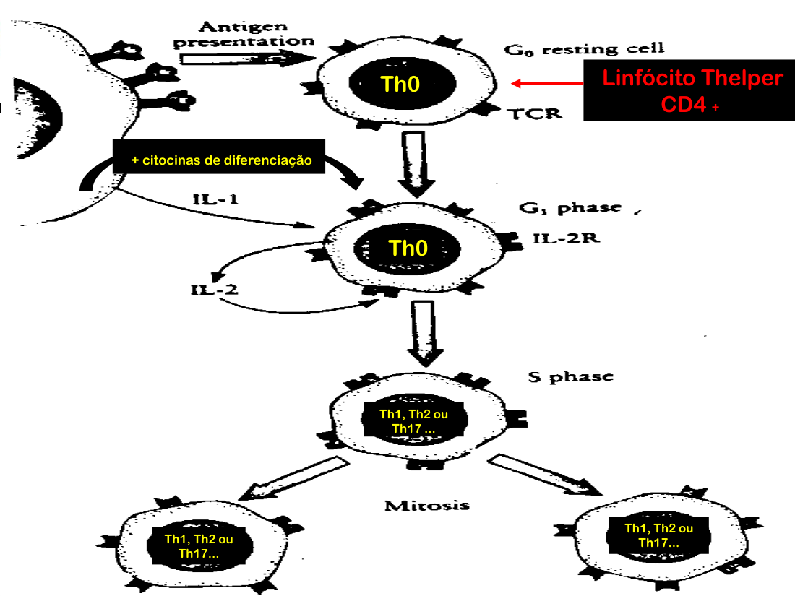
Resposta TH1 — imunidade celular contra intracelulares
Quando aparece: invasores predominantemente intracelulares (vírus, bactérias intracelulares como micobactérias, protozoários intracelulares) e neoplasias.
Citocinas de diferenciação (o que a dendrítica e a NK trazem): IL-12 e IFN-γ (interferon do tipo II). Detalhe de prova: interferon tipo I são "todos menos o gama"; o tipo II é o IFN-γ, produzido por Th1, CD8 e NK. O IFN-γ via STAT1 induz o fator de transcrição T-bet; a IL-12 via STAT4 fecha o programa — desligam-se os genes de Th2/Th17 e liga-se o de Th1.
Citocina de assinatura do TH1 (a única que você precisa decorar): IFN-γ. O Tfh1 secreta exatamente a mesma — IFN-γ.
Ações efetoras do IFN-γ:
- No macrófago: ativa o macrófago M1 (via clássica) — aumenta atividade microbicida, espécies reativas de oxigênio, hidrolases, fagocitose e a secreção de TNF-α, IL-1 e IL-12 (retroalimentação positiva para Th1). Aumenta a expressão de HLA de classe I e II.
- No linfócito B (via Tfh1): dirige o switch de classe para IgG opsonizante e ativadora do complemento (via clássica, formação do MAC).
- No CD8+: o Th1 ajuda a ativar o linfócito T citotóxico, que mata por dois sistemas — perforina/granzima B (granzima ativa diretamente a procaspase-3) e Fas/Fas-ligante (recruta caspase-8). São pontos de não retorno da apoptose.
É a resposta mais inflamatória de todas.
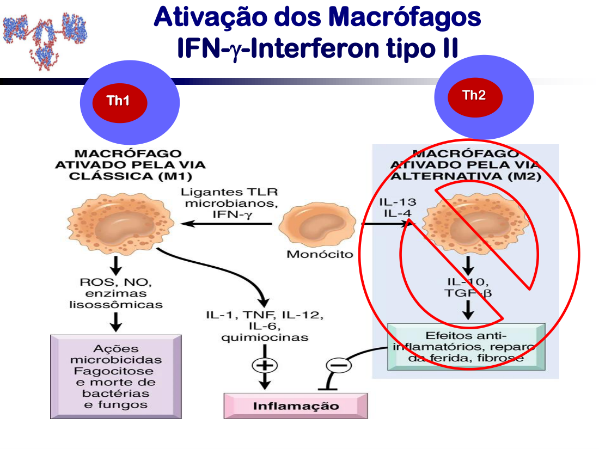
Exemplo clínico TH1 — tuberculose e o paciente HIV+
A micobactéria sobrevive dentro do fagolisossomo do macrófago. Sozinho, o macrófago não a mata: ele precisa do Th1 chegando ao pulmão e gritando IFN-γ, que turbina a microbicidia e ajuda a formar o granuloma que contém o bacilo. O paciente HIV+ descompensado, com depleção de CD4+, perde justamente esse Th1: sem IFN-γ ativando o macrófago, a micobactéria não é morta e se dissemina (TB miliar) — por isso a coinfecção pelo complexo Mycobacterium tuberculosis é uma das principais causas de morte nesses pacientes. É a tradução clínica de "imunocompetência = sobrevivência".
Resposta TH2 — imunidade humoral, eosinófilos, IgE
Quando aparece: invasores predominantemente extracelulares que irritam mucosas — alérgenos e helmintos (vermes).
O detalhe mecanístico crucial: nos irritantes de mucosa, a dendrítica não identifica nada no interior (não há alarme intracelular tocado), então ela não secreta citocina de diferenciação. Como então o TH0 vira TH2? O próprio TH0 produz um basal de IL-4 constitutivamente. Na ausência de citocina de diferenciação (sem IL-12/IFN-γ para bloquear), essa IL-4 basal — impulsionada pela IL-2 pró-resposta — ganha força, se amplifica e dispara a via STAT6 → GATA-3, diferenciando em TH2. Correção que o professor faz questão: o RNAm de IL-4 vem do próprio linfócito T, não do mastócito (livros antigos erram isso).
Citocina de diferenciação do TH2: IL-4.
Quatro citocinas de assinatura para saber: IL-4, IL-5, IL-13 e IL-10.
- IL-4 (via Tfh2): switch de classe para IgE (liga-se a mastócito, basófilo e eosinófilo) e para IgG não-opsonizante. Aumenta produção de basófilos e mastócitos.
- IL-5: aumenta proliferação e ativação de eosinófilos (sobe no hemograma da alergia/verminose) e dirige o switch para IgA (protetor de mucosa, presente no colostro).
- IL-4 + IL-13: nas células de mucosa, aumentam peristaltismo e produção de muco (expulsão mecânica do verme); ativam o macrófago M2 (via alternativa) — reparo, deposição de colágeno, fibrose, anti-inflamatório.
- IL-10: imunossupressora — inibe síntese de IL-12, TNF, IL-1 e IL-2; reduz expressão de MHC-II; inibe a resposta Th1; aumenta proliferação/diferenciação de células B.
A balança da dicotomia pende para a resposta humoral — coerente, porque é preciso neutralizar o que está fora das células, nas mucosas.
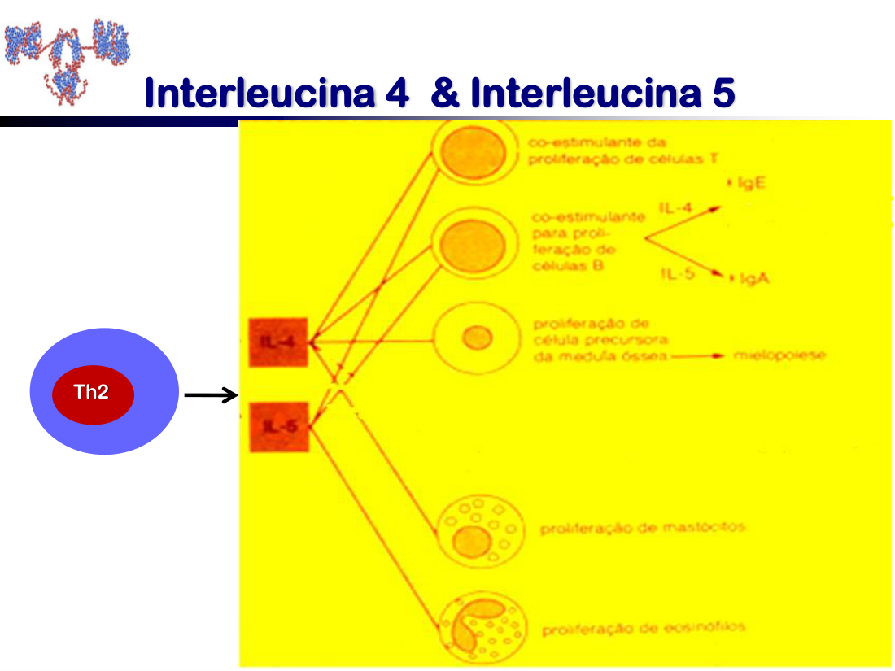
Mecanismo molecular do switch para IgE — corroborando a aula
A síntese de IgE pelo linfócito B exige dois sinais: o primeiro é dado pelas citocinas IL-4 ou IL-13, que direcionam o gene Cε para a recombinação de troca de classe (switch recombination); o segundo é a interação CD40–CD40L entre B e T ativado. Ao ligar-se ao IL-4Rα, a IL-4 ativa JAK1, recruta a cadeia γc (JAK3), e fosforila STAT6, que migra ao núcleo. O switch é um evento de recombinação no DNA que troca o segmento da região constante da cadeia pesada (mantendo a região variável). A troca para IgG1 frequentemente precede a IgE — ou seja, o B costuma fazer switch sequencial, não direto.[3]
Resposta TH17 — neutrófilos contra bactérias extracelulares e fungos
História: o TH17 chega em 2000 e só consolida nos livros de graduação em 2007. Antes só existiam TH1 e TH2 — o que era um "furo", porque a dicotomia não explicava o combate a Staphylococcus aureus, E. coli, Salmonella, Shigella e à Candida. O nome vem do primeiro gene diferencialmente expresso descoberto: a IL-17. (Não é "TH3" porque esse número era do antigo "linfócito T supressor", hoje abandonado.)
Quando aparece: bactérias extracelulares e fungos em geral. Exceção: micoses sistêmicas não-oportunistas por superexposição (histoplasmose, criptococose, paracoccidioidomicose) tendem a resposta TH1 com granuloma, igual à micobactéria.
Citocinas de diferenciação: IL-6, IL-1, IL-23 e — em destaque — TGF-β em ALTAS concentrações. Sem TGF-β alto, a via STAT3 não se forma e a célula não diferencia (fica TH0 sem proliferar). É o ponto que diferencia do Treg (TGF-β baixo).
Citocinas de assinatura: IL-17 e IL-22.
- IL-17 = a resposta do neutrófilo: recruta neutrófilos (via IL-8, principal quimiotático) e aumenta sua produção na hematopoese. Macrófago é M1.
- IL-17 + IL-22: induzem defensinas (peptídeos antimicrobianos ricos em cisteína — "antibióticos naturais").
- IL-22: reforça barreiras (muco, respostas mecânicas/epiteliais).
É a resposta intermediária em inflamação: mais inflamatória que TH2, menos que TH1.
Treg — "faça amor, não faça guerra" (TGF-β baixo, IL-10)
O linfócito T regulador (Treg) — antes chamado de "T supressor", depois caracterizado pela via de diferenciação Foxp3+ — é a célula da tolerância. Sua citocina-mestre é o TGF-β em BAIXAS concentrações, somado à IL-10; ambas reduzem a resposta imune de modo geral (down-regulation de Th1, Th2 e Th17), favorecem reparo e ajudam a formar memória.
Por que o TGF-β aqui é baixo? Porque o Treg surge na ausência de estímulo — quando o patógeno está sendo derrotado e o IFN-γ (ou o estímulo Th2/Th17) cai, o gene do TGF-β é expresso mas sem amplificação, ficando em baixa concentração. Já no TH17 há estímulo ativo (bactéria/fungo presentes), e o TGF-β sobe a altas concentrações. A diferença de concentração do TGF-β é o que decide Treg (baixo) × Th17 (alto).
"reg", não "supressor": a distinção é didática e importante. O supressor antigo só desligava; o regulador predominantemente faz down-regulation, mas, se o patógeno voltar a ganhar força, ele consegue fazer up-regulation rapidamente, reativando Th1/Th2/Th17.
Mecanismos de supressão do Treg — base molecular
Os Tregs, subtipo de CD4+ dependente do fator de transcrição Foxp3, são essenciais para a homeostase imune e a autotolerância periférica. A supressão envolve tanto mecanismos de contato célula-célula (TGF-β de membrana, CTLA-4) quanto citocinas solúveis imunossupressoras — TGF-β, IL-10 e IL-35. A TGF-β latente de superfície pode inclusive converter células Foxp3− em Foxp3+ (tolerância infecciosa), e tanto IL-10 quanto TGF-β estão implicadas na indução e manutenção da tolerância periférica.[4]
⚑ CAI NA PROVA — As citocinas de cada subtipo (o que decorar)
O professor repetiu isso à exaustão e disse explicitamente "vou perguntar isso", "você tem que saber", "vai ter que saber uma citocina só":
- TH1: diferenciação = IL-12 + IFN-γ; assinatura = só o IFN-γ. (Tfh1 também secreta IFN-γ.)
- TH2: diferenciação = IL-4; assinatura = saber quatro: IL-4, IL-5, IL-13, IL-10.
- TH17: diferenciação = IL-6, IL-1, IL-23 + TGF-β ALTO; assinatura = IL-17 e IL-22.
- Treg: citocina-mestre = TGF-β BAIXO + IL-10; fator = Foxp3.
⚑ CAI NA PROVA — Ponto de não retorno e a "polarização errada" das doenças
O raciocínio que o professor quer que você leve: a diferenciação é um ponto de não retorno — um TH1 jamais vira TH2, um TH2 jamais vira TH17. É um "ligar/desligar genes" definitivo. A consequência clínica é poderosa: quando a célula dendrítica falha em detectar que a micobactéria é intracelular, ela não traz as citocinas de diferenciação corretas, a população predominante vira TH2 em vez de TH1, e o paciente "responde com alergia a uma micobactéria" — daí a hanseníase virchowiana/lepromatosa (nódulos, perda de pelos) ser tão pior que a tuberculoide, e a sífilis terciária ter predomínio TH2 descrito nos livros. O prognóstico ruim está, muitas vezes, nesse erro de entrega da dendrítica.
⚑ CAI NA PROVA — TGF-β: a mesma citocina, dois destinos pela concentração
Repetido "4 ou 5 vezes": o TGF-β em ALTAS concentrações (com estímulo de bactéria/fungo presente) → polariza TH17. O TGF-β em BAIXAS concentrações (ausência de estímulo, fim da resposta) → polariza Treg (down-regulation). Saber a concentração é o pulo do gato. O professor avisou que cobra a IL-23 e a questão da concentração.
⚑ CAI NA PROVA — Candida e fungos = TH17 "na paulada"
Houve uma questão do progresso: "infecção por Candida, qual T helper predomina?" — resposta TH17. O professor acha a pergunta mal formulada (sem contexto poderia haver TH1 em imunocomprometido), mas o recado é claro: se perguntarem direto, fungo/bactéria extracelular = TH17. Em prova de residência, responda o esperado (TH17), não arrisque a discussão de contexto.
Contraregulação Th1 × Th2 — antagonismo recíproco
As respostas se inibem mutuamente (propriedade de antagonismo das citocinas): o IFN-γ (Th1) inibe Th2 bloqueando a IL-4; e as citocinas da resposta Th2 inibem Th1 bloqueando a IL-12 (a IL-10 inibe IL-12, TNF, IL-1). Quem "ganha" depende da maior quantidade de citocina, que por sua vez depende do comportamento do invasor. Por isso na vida real coexistem misturas (ex.: TH1 com um pouco de TH17), e o que se diz é qual resposta predomina, não que seja exclusiva.
Conexões com outras aulas e o "alerta de fronteira" da ciência
Com a aula de citocinas da inata (aula 4): a IL-1 que dispara o "estamos sendo atacados", o TNF e a IL-12 do macrófago, os interferons — tudo aquilo prepara e retroalimenta a polarização adaptativa aqui. M1/M2 (ativação clássica × alternativa) conecta inata e adaptativa: IFN-γ → M1; IL-4/IL-13 → M2.
Com a próxima aula (hipersensibilidade): a IgE gerada pela IL-4 do TH2 é o estopim da hipersensibilidade tipo I (alergia), tema do próximo encontro.
Recado de método do professor: existem subtipos ainda não consolidados (TH9, TH22, a hipotética "TH25" produtora de IL-25 — que na verdade já é feita pela TH2). O livro dá só a função, não o "como" (por que baixa/alta concentração). E o alerta final: cuidado com estudos só em rato extrapolados para humano e com "ciência de TikTok" — saber a fonte e interpretar é parte do ofício médico.
- A célula dendrítica decide a polarização: IL-1 ("estamos sendo atacados") + citocinas de diferenciação conforme o invasor; TH0 vira TH1/TH2/TH17/Treg (ponto de não retorno).
- IL-2 = fator de crescimento de linfócito T + pró-resposta inespecífica (amplifica o gene já aberto).
- TH1 (intracelulares/neoplasias): diferenciação IL-12 + IFN-γ; assinatura IFN-γ; ativa macrófago M1, IgG opsonizante; resposta mais inflamatória.
- TH2 (alérgenos/helmintos): diferenciação IL-4 (basal do próprio T); assinatura IL-4/IL-5/IL-13/IL-10; IgE, eosinófilo/mastócito, muco, macrófago M2.
- Switch de classe é dirigido por citocina: IL-4 → IgE; IFN-γ → IgG opsonizante; IL-5 → IgA de mucosa.
- TH17 (bactérias extracelulares/fungos): diferenciação IL-6/IL-1/IL-23 + TGF-β ALTO; assinatura IL-17/IL-22; neutrófilo (IL-8), defensinas, M1.
- Treg (tolerância): TGF-β BAIXO + IL-10, Foxp3; a concentração do TGF-β separa Treg (baixo) de TH17 (alto).
- Contraregulação Th1 × Th2: IFN-γ inibe Th2; resposta Th2 (IL-10) inibe Th1; vence quem tiver maior quantidade de citocina.
Alergia e Hipersensibilidade
Contexto e motivação — por que isso importa
Hipersensibilidade é uma resposta imune aberrante ou excessiva contra antígenos não-próprios, em que o dano ao tecido é causado pelos mesmos mecanismos que normalmente nos protegem. O termo "alergia" foi cunhado por von Pirquet (1906), do grego allos (diferente) + ergon (trabalho): "reatividade alterada". Para o médico, esse tema é o pão de cada dia: rinite, asma, dermatite atópica, alergia alimentar, alergia a fármacos e o temido choque anafilático — uma emergência que mata em minutos se não for reconhecida. O professor fechou o curso com este tema e deixou uma mensagem: "as alergias estão sempre um passo à nossa frente", porque a modernidade (corantes, conservantes, fármacos novos) introduz alérgenos novos todo dia.
Quem é o indivíduo suscetível? Três alicerces
O professor estruturou a suscetibilidade à alergia em três pilares:
1) Ambiente — Hipótese da Higiene. A criança que tem o contato com o meio ambiente excessivamente restringido não "treina" o sistema imune. No timo ocorre seleção positiva de células reativas a antígenos ambientais; sem exposição precoce, a criança não forma repertório (células de memória) e, junto com ele, não desenvolve os mecanismos de tolerância. Quando adulto encontra aquele antígeno, reage de forma exagerada. O professor destacou que o parto vaginal contribui para a formação desse repertório por causa do contato com a microbiota da genitália materna.
2) Responsividade imune — o balanço Th1/Th2. Veja o bloco específico abaixo.
3) Genética. Genes hiperexpressos predispõem: FcεR1 (receptor de alta afinidade para IgE), IL-4 (citocina e seu receptor), CD14 (um PRR, molécula reconhecedora de padrões) e HLA-DR (apresentação de antígeno). Cerca de 60–80% das alergias (asma) podem ser herdadas, mas o professor frisou: NÃO existe padrão de herança definido (não é autossômico dominante nem ligado ao X) — há quase 40 genes envolvidos. O que se pode afirmar é apenas que filhos de pais alérgicos têm mais chance de serem alérgicos.
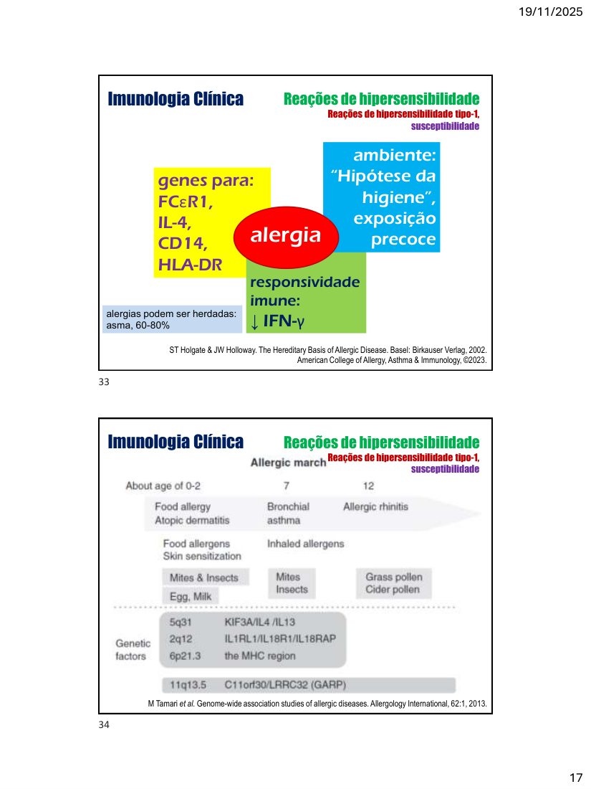
O coração da explicação: balanço Th1 / Th2
O linfócito T CD4 virgem (Th0) "decide o que será quando crescer" pelo microambiente de citocinas no linfonodo. As citocinas de assinatura definem o perfil:
- Th1 — assinatura: IFN-γ e IL-2 (guarde estas duas), além de linfotoxina e IL-12.
- Th2 — assinatura: IL-4 e IL-5 (guarde estas duas), além de IL-9, IL-13, IL-31.
Existe antagonismo mútuo: o IFN-γ (Th1) inibe Th2; a IL-4 (Th2) inibe Th1. No indivíduo saudável há equilíbrio. Quando pende para Th2 (mais IL-4, mais IL-5), a IL-4 manda o Th1 fazer menos IFN-γ → este é o indivíduo alérgico. Conclusão do professor: quem faz MENOS IFN-γ é mais suscetível à alergia, e o indivíduo "saudável" imunologicamente é o Th1, porque o perfil Th1 induz tolerância ao alérgeno.
⚑ CAI NA PROVA — Alergia é distúrbio Th2 / déficit de IFN-γ
O professor repetiu à exaustão ("encostar a cabeça no travesseiro e dormir tranquilo, vocês entenderam mesmo?") o raciocínio nuclear: alergia = resposta Th2. O alérgico faz muita IL-4 (que faz o switch para IgE) e, por antagonismo, pouco IFN-γ. Logo, menor produção de IFN-γ = maior suscetibilidade à alergia. Não confunda as assinaturas: Th1 → IFN-γ + IL-2; Th2 → IL-4 + IL-5. A pegadinha clássica é trocar a citocina que induz o switch para IgE — é a IL-4, não a IL-5.
A classificação de Gell & Coombs (1970)
A classificação de Gell e Coombs divide as reações de hipersensibilidade em quatro tipos fisiopatológicos: tipo I (anafilática/imediata, IgE + mastócitos/basófilos), tipo II (citotóxica, anticorpo contra antígeno de superfície celular), tipo III (imunocomplexos) e tipo IV (tardia, mediada por células T).[1] Os tipos I, II e III são mediados por anticorpo (hipersensibilidades imediatas) e o tipo IV é mediado por células (tardia).[1] O curso temporal é distinto: sintomas do tipo I aparecem em segundos a minutos; tipo II em minutos a horas; tipo III após várias horas; e tipo IV com latência de horas a dias.[1] Embora proposta há mais de 30 anos, segue amplamente usada na prática clínica.[1]
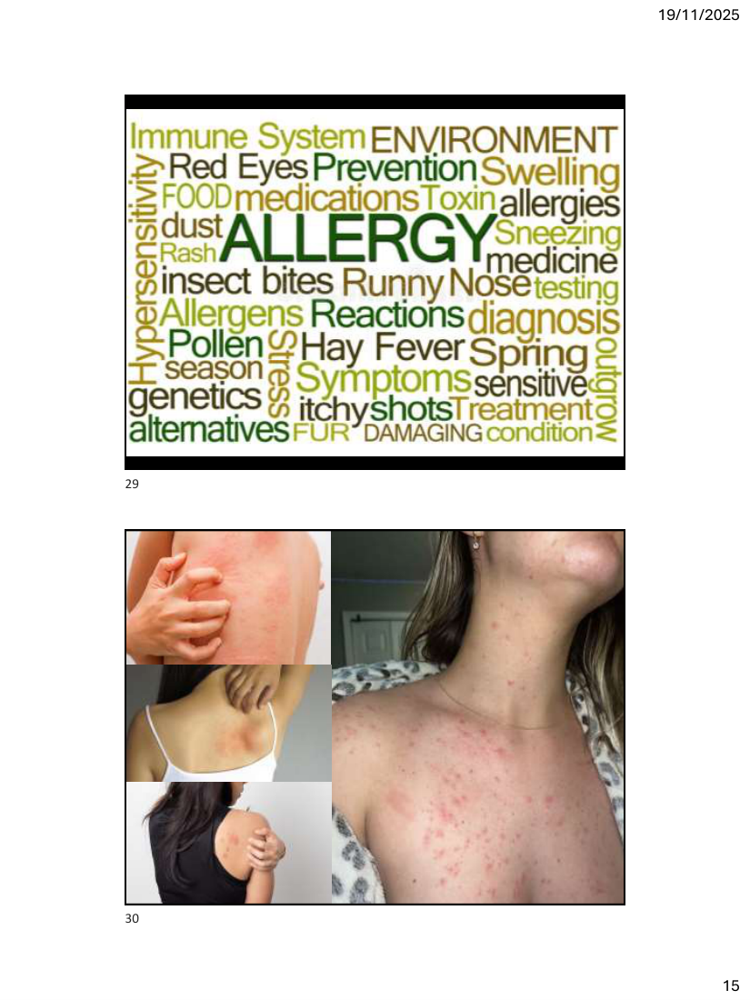
Mecanismo do tipo I, passo a passo — sensibilização × reexposição
Não existe alergia no primeiro contato. Por quê? Porque IgE só se forma no segundo contato (depende de switch de classe). Veja a sequência:
1ª fase — sensibilização. A célula dendrítica capta o alérgeno (ex.: grão de pólen) via PRR como o CD14, faz fagocitose e apresenta no MHC de classe II ao linfócito T CD4. No microambiente Th2, a célula vira Th2 e secreta IL-4. A IL-4 induz no linfócito B o switch de classe: o B que tinha respondido com IgM e faria IgG passa a fazer IgE específica. Geram-se linfócitos B de memória.
2ª fase — reexposição. A IgE produzida se liga, pela porção Fc (cadeia pesada ε), ao receptor de alta afinidade FcεR1 na superfície de três células: mastócito, basófilo e eosinófilo (mnemônico do professor: "Basófilo, Eosinófilo, Mastócito — BEM"). Quando o alérgeno volta e faz ligação cruzada com a IgE já fixada, o mastócito fica "armado".
O professor martelou: "armado" = IgE ligada no alérgeno E ligada no FcεR1 — é E, não OU. Só o mastócito armado degranula. A simples ligação da IgE no receptor não basta; é preciso o alérgeno fazer a ponte.
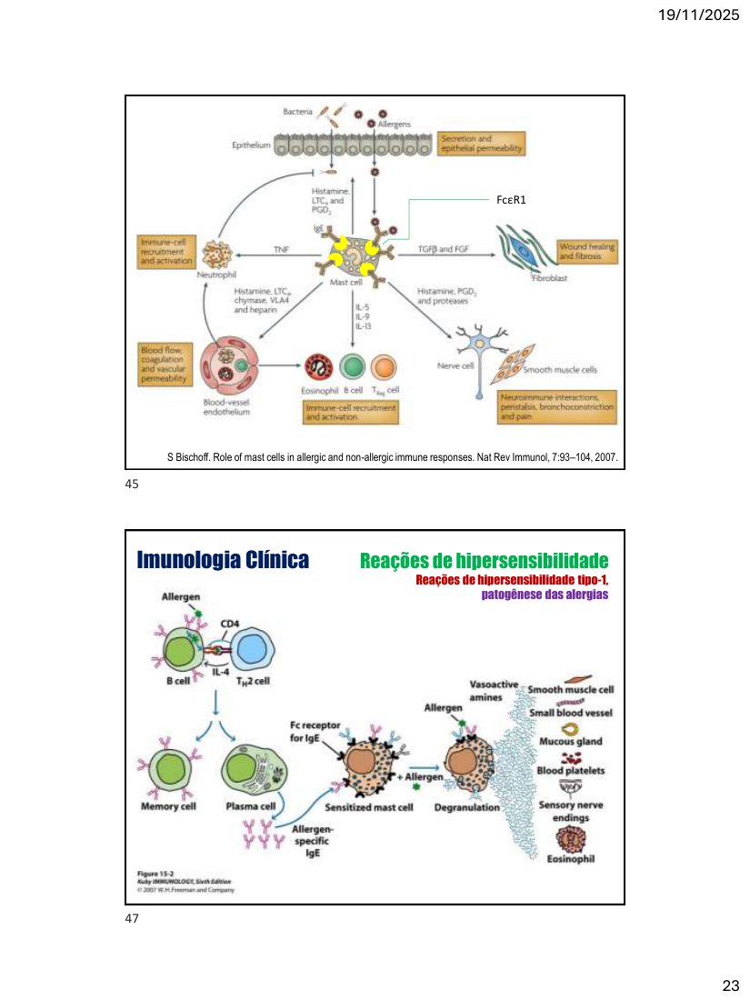
Mediadores liberados pelo mastócito — por que a alergia é "atópica"
O mastócito é a célula mais importante porque está nos tecidos. Ao degranular, libera mediadores pré-formados e outros sintetizados depois:
- Histamina → vasodilatação → ↑ permeabilidade vascular → extravasamento de líquido (edema) e de células (inflamação). Atua em receptores H1, H2, H3 (e H4) espalhados por pulmões/vias aéreas (H1, H3), vasos (H1, H2), intestino (H3), barreira hematoencefálica (H2), neutrófilos e tecido adiposo (H4). Isso explica por que a alergia dá sintomas sistêmicos e "fora de lugar": pele (manchas disseminadas), diarreia (alergia alimentar via H3) e dor de cabeça (H1/H2).
- Leucotrienos e prostaglandinas → mediadores inflamatórios; prostaglandina aumenta sensibilidade à dor e, com IL-1/IL-6, eleva temperatura (febre não é incomum na alergia).
- TNF → atrai neutrófilo (primeira célula a chegar) → fagocitose.
- Citocinas Th2: IL-5, IL-9, IL-13.
- TGF-β e FGF → reparo tecidual (haverá dano, logo há reparo).
Por isso a dermatite atópica tem o padrão característico: "uma área afetada, uma área saudável" — porque a IgE se espalhou pelo plasma sanguíneo e tecidual, disseminando a degranulação em pontos diferentes do corpo.
⚑ CAI NA PROVA — IgE é o "mediador" / papel central da alergia
O professor disse explicitamente que a IgE é a figura mais importante / o "mediador" das alergias: "se você não forma IgE, não tem alergia; se forma, tem". Ela está "no meio", no centro do desenvolvimento da alergia. Curiosidade que ele frisou: a IgE foi a última imunoglobulina descoberta (anos 1960), embora os testes cutâneos existam desde o fim do séc. XIX. A IgE não é boa de neutralização (quem neutraliza bem é IgM, IgG, IgA) — sua importância é diagnóstica e patogênica.
⚑ CAI NA PROVA — Asma, vermes e o "camarão da primeira vez"
Pontos que o professor sinalizou como pegadinhas:
- Asma = hipersensibilidade tipo 1 no aparelho respiratório (pólen, poeira). A crise vem pouco tempo depois — daí "imediata".
- IgE total aumentada e eosinofilia ocorrem em DUAS situações: alergias (tipo 1) E verminoses/helmintíases. A resposta a vermes também é tipo 1. A IL-5 acelera a maturação do eosinófilo na medula → eosinofilia.
- "Nunca comi camarão e tive anafilaxia na primeira vez": aparentemente contradiz a regra de que não há alergia no 1º contato. A solução: o paciente teve contato prévio sem saber — ex.: usou produtos com quitosana (derivada da casca do camarão). O contato com o camarão real foi, imunologicamente, o segundo contato.
Anafilaxia: por que adrenalina é a primeira linha
Há consenso internacional de que a adrenalina (epinefrina) é o tratamento de primeira linha da anafilaxia, devendo ser administrada por via intramuscular sem demora.[2] Ela reverte a fisiopatologia por múltiplos receptores: α1 → vasoconstrição (combate edema de vias aéreas, hipotensão e choque distributivo); β1 → ↑ frequência e contratilidade cardíaca; β2 → broncodilatação e estabilização de mastócitos.[2] Anti-histamínicos e corticoides são apenas segunda linha e não substituem a adrenalina.[2] Isso corrobora a fala do professor: na sala de testes cutâneos deve haver canetas de adrenalina prontas, pois a vasodilatação sistêmica pela histamina pode levar a choque e asfixia por edema das vias aéreas.
Diagnóstico do tipo 1
O raciocínio diagnóstico começa pela clínica e pela história (alergia familiar?). Exames:
- IgE total — peça de cara (junto com IgM e IgG totais); estará aumentada.
- Testes cutâneos (provocação com alérgeno). Protocolo de puntura/picada (prick test): pinga-se a gota do extrato e faz-se microescarificação com lanceta. Controle negativo = água destilada; controle positivo = histamina. Critério de positividade: pápula igual ou maior que a da histamina. Condição sine qua non: o indivíduo NÃO pode coçar. Faz-se duas leituras: 3 horas e 24 horas (a maioria das reações ocorre nas 3 primeiras horas, mas o tipo 1 vai até 24h). Todo teste exige supervisão médica pelo risco de anafilaxia.
- IgE específica (ELISA) — confirma o alérgeno; o RAST está em desuso por usar radioatividade.
⚑ CAI NA PROVA — Tempos do teste cutâneo e controles
O professor cobrou diretamente: a hipersensibilidade tipo 1 se processa até 24h (maioria nas 3 primeiras horas); a tipo 4 é entre 24 e 48–72h. Por isso faz-se duas leituras (3h e 24h). Memorize os controles: negativo = água destilada; positivo = histamina. Positividade = pápula ≥ a da histamina.
Tipo III — doença por imunocomplexos
No tipo III, complexos antígeno-anticorpo formados na circulação não são adequadamente depurados e se depositam nos tecidos (rins, articulações e pequenos vasos da pele).[3] Esses imunocomplexos ativam a via clássica do complemento, gerando fatores quimiotáticos que recrutam neutrófilos; a liberação de enzimas proteolíticas e espécies reativas de oxigênio causa inflamação e lesão local.[3] Exemplos: doença do soro, lúpus eritematoso sistêmico (LES), glomerulonefrite pós-estreptocócica e vasculites por hipersensibilidade.[3] A doença do soro aguda segue exposição a grande quantidade de antígeno; a crônica, exposição repetida (como no LES).[3]
Tipo IV — hipersensibilidade tardia, mediada por células T
O tipo IV é mediado por linfócitos T (CD4+ e CD8+), sem participação de anticorpo, manifestando-se tipicamente 48 a 72 horas após a exposição.[4] O atraso decorre da necessidade de células T de memória distribuídas após um primeiro contato, que ao serem reestimuladas pelo antígeno apresentado em MHC II secretam citocinas que recrutam e ativam linfócitos e fagócitos.[4] Exemplos clássicos: o teste tuberculínico (Mantoux/PPD), a dermatite de contato (níquel, látex) e reações granulomatosas; formas graves incluem síndrome de Stevens-Johnson e necrólise epidérmica tóxica.[4]
⚑ CAI NA PROVA — Não confundir tipo I com tipo IV (tempo e mecanismo)
A maior pegadinha do quadro de Gell & Coombs é confundir tempo e mediador. Tipo I (imediata): IgE, mastócito, histamina, até 24h. Tipo IV (tardia): linfócito T, SEM anticorpo, 24–72h (ex.: PPD, dermatite de contato). Repare que o próprio teste cutâneo de alergia (tipo I) tem leitura em 3h e 24h, enquanto o tuberculínico (tipo IV) lê-se em 48–72h. Tipo II = citotóxica (IgG/IgM contra superfície celular + complemento/ADCC: reação transfusional, doença hemolítica do RN, Graves). Tipo III = imunocomplexos (LES, doença do soro, GN pós-estreptocócica).
Conexões com outras aulas
Esta aula amarra vários temas do curso: o sistema complemento (via clássica é o efetor dos tipos II e III); a apresentação de antígeno via MHC II e os perfis de T CD4 (Th1/Th2); o switch de classe de imunoglobulinas dependente de citocina (IL-4 → IgE). A doença hemolítica do recém-nascido (tipo II) conversa com a aula de complemento, e a glomerulonefrite/LES (tipo III) com depósito e ativação de complemento. O eixo Th1/Th2 explica por que um mesmo antígeno é alérgeno para um indivíduo e inócuo para outro.
- Hipersensibilidade = resposta imune excessiva/aberrante; Gell & Coombs classifica em 4 tipos (I, II, III mediados por anticorpo; IV por células T).
- Tipo I é Th2-dependente: IL-4 faz o switch para IgE; quem faz MENOS IFN-γ é mais suscetível (balanço Th1/Th2).
- Não há alergia no 1º contato: 1ª fase = sensibilização (IgE); 2ª fase = reexposição → mastócito "armado" (IgE + alérgeno + FcεR1) degranula.
- IgE liga-se a mastócito, basófilo e eosinófilo (FcεR1, porção Fc/cadeia ε). IgE é o "mediador central" da alergia.
- Histamina (vasodilatação, ↑permeabilidade) + leucotrienos/prostaglandinas + TNF → fenômeno inflamatório sistêmico e "atópico" (fora de lugar).
- IgE total ↑ e eosinofilia: alergias E verminoses. IL-5 → eosinofilia.
- Diagnóstico: clínica + IgE total + teste cutâneo (controle − água, + histamina; pápula ≥ histamina; leituras 3h e 24h; não coçar; supervisão médica) + IgE específica.
- Anafilaxia: adrenalina IM é primeira linha (α1 vasoconstrição, β1 cardíaco, β2 broncodilatação); anti-histamínico/corticoide são 2ª linha.
Sistema Complemento
| Via | Gatilho inicial | Especificidade | Observação |
|---|---|---|---|
| Clássica (CAI NA PROVA) | Anticorpo IgG ou IgM ligado ao antígeno (via FC) | Um pouco maior | C1 cliva C4→C2→C3→C5 |
| Alternativa | Clivagem espontânea do C3 na membrana do micróbio + fator B/D + properdina | Inespecífica | Mais frequente; sem anticorpo |
| Lectinas | Lectina (MBL) liga-se à manose da parede de bactéria/fungo | Inespecífica | Após o início = idêntica à clássica |
| Regulador | Onde atua | Efeito |
|---|---|---|
| CD55 (DAF) | Cedo — sobre a C3-convertase | Acelera sua destruição (corta antes) |
| CD59 | Tardio — sobre o C9 | Impede a polimerização → bloqueia o MAC |
| Âncora comum: GPI (glicana-fosfatidil-inositol). Sem GPI → sem CD55/CD59 → HPN. | ||
| HPN — valores do caso | |
|---|---|
| Hemoglobina | 7,8 g/dL (anemia) |
| Reticulócitos | 3,1% |
| Plaquetas | 26.000/mm³ |
| LDH | 1638 U/L (hemólise em curso) |
| Hemácias CD55/CD59 negativas | 5% (clone tipo III) |
| Conduta antes do eculizumabe | Vacina meningocócica |
Anticorpos / Imunoglobulinas
| Padrão eletroforese (fração γ) | Aspecto | Pensar em |
|---|---|---|
| Pico policlonal | γ elevada e larga | Infecção / doença autoimune / pós-vacinação |
| Pico monoclonal | γ muito alta, estreita, definida | Mieloma / plasmocitoma / linfoma B |
| Hipogamaglobulinemia | γ achatada ("flat") | Imunossupressão (antineoplásico/transplante) / agamaglobulinemia de Bruton (primária) |
| Classe | Cadeia pesada | Forma | Marca |
|---|---|---|---|
| IgG | γ (gama) | monômero | Resposta secundária/memória/crônica · única que atravessa placenta · ativa complemento · leite materno |
| IgM | μ (mi) | pentâmero (peça J) | Resposta primária/fase aguda · maior avidez · ativa complemento · NÃO passa placenta |
| IgA | α (alfa) | monômero / dímero | Mucosas e leite materno · dímero = peça J + peça secretora · NÃO ativa complemento |
| IgE | ε (épsilon) | monômero | Alergia (mastócito→histamina) e helmintos · sempre 2ª resposta |
| IgD | δ (delta) | monômero | Função efetora indefinida (ligada à ativação do linfócito B) · não faz switch |
Antígenos e Vias de Apresentação
| Característica | Linfócito B | Linfócito T |
|---|---|---|
| Receptor | Ig de superfície (BCR = IgM/IgD) | TCR (cadeia α + β) |
| Natureza do antígeno | Diversa (proteína, polissacarídeo, lipídeo, hapteno, LPS) | Apenas proteínas (peptídeos) |
| Localização | Solúvel ou na superfície | Superfície de outra célula, no MHC |
| Reconhecimento | NATIVO (sem processar) | PROCESSADO (apresentado por MHC) |
| Característica | HLA Classe I | HLA Classe II |
|---|---|---|
| Estrutura | 1 cadeia α + β2-microglobulina | 1 cadeia α + 1 cadeia β |
| Nº de genes | 6 (3 pai + 3 mãe) — A, B, C | ~18 (metade pai/mãe) — DP, DQ, DR |
| Expressão | Todas as células nucleadas (não hemácia) | Só APC profissional: macrófago, DC, linfócito B |
| Apresenta a | Linfócito T CD8+ (citotóxico) | Linfócito T CD4+ (helper) |
| Origem do antígeno | ENDÓGENO / citosólico | EXÓGENO / vesicular |
| Degradação | Proteassoma (após ubiquitinação) | Fagolisossomo (hidrolases) |
| Transporte/carregamento | TAP → RE; tapasina segura HLA-I no TAP | CLIP/cadeia invariante removidos no vacúolo (HLA-DM) |
| Peptídeo | Curto (~8–11 aa) | Mais longo (variável) |
| Timo-dependente (TD) | Timo-independente (TI) | |
|---|---|---|
| Natureza típica | Proteína | Polissacarídeo (TI-2) / LPS (TI-1) |
| Sinal 2 do B | CD4 helper (CD40L–CD40) | Sem participação do T |
| Troca de classe / afinidade | Sim | Limitada (predomina IgM) |
| Memória | Sim, robusta | Fraca / ausente |
Via Classe I (endógena) — fluxo:
Via Classe II (exógena) — fluxo:
Citocinas na Resposta Inata — Propriedades Gerais, TNF · IL-1 · IL-6 · IFN tipo I
| Citocina | Fonte principal | Ações-chave (inata) |
|---|---|---|
| TNF | Macrófago (TLR), LT, NK, mastócito | Adesinas, vasodilatação, ativa neutrófilo (ERO); sistêmico: depressão miocárdica, hipotensão, trombose (inibe trombomodulina), caquexia. Pirógeno. |
| IL-1 | Macrófago, endotélio, epitélio | Redundante ao TNF; fase aguda → amiloide A + fibrinogênio; pirógeno; ELO inata→adaptativa (2º sinal do linfócito T → IL-2 → mitose). |
| IL-6 | Macrófago, endotélio, LT | Resposta a IL-1/TNF; fase aguda no HEPATÓCITO → PCR; pirógeno; crescimento de LB. |
| IFN tipo I (α/β) | Macrófagos e fibroblastos | Célula infectada (autócrino): ↑HLA-I → suscetibilidade ao CD8. Vizinha (parácrino): estado antiviral (enzimas antivirais). Medicamento: IFN-α. |
| Choque séptico/endotóxico (TNF + IL-1 + IL-6 ↑↑) | Mecanismo |
|---|---|
| Redução da perfusão tissular | Depressão do miocárdio (↓contratilidade → ↓débito cardíaco) |
| Queda da PA / hipotensão | Relaxamento do tônus da musculatura lisa vascular (vasodilatação + ↑permeabilidade) |
| Trombose intravascular → CIVD | Inibição de trombomodulina + fator tecidual pró-coagulante |
| Distúrbio metabólico severo | Queda da glicose sanguínea; caquexia (atrofia de adipócito e músculo) |
Citocinas na Resposta Adaptativa — Polarização do T Helper
| Subtipo | Invasor | Diferenciação | Assinatura | Efetores |
|---|---|---|---|---|
| TH1 | Intracelulares, neoplasias | IL-12 + IFN-γ | IFN-γ | Macrófago M1, IgG opsonizante/ativa complemento, CD8 |
| TH2 | Alérgenos, helmintos | IL-4 (basal do T) | IL-4, IL-5, IL-13, IL-10 | IgE, IgA (IL-5), eosinófilo/mastócito/basófilo, muco+peristaltismo, macrófago M2 |
| TH17 | Bactérias extracel. e fungos | IL-6, IL-1, IL-23 + TGF-β alto | IL-17, IL-22 | Neutrófilo (IL-8), defensinas, barreira/muco, M1 |
| Treg | Fim da resposta / tolerância | TGF-β baixo + IL-10 (Foxp3) | TGF-β, IL-10 | Down-regulation de Th1/Th2/Th17, memória; up-reg. se preciso |
| Citocina dirige o switch para… | Anticorpo | Função |
|---|---|---|
| IFN-γ (TH1) | IgG opsonizante | Opsonização + ativa complemento (via clássica, MAC) |
| IL-4 (TH2) | IgE (e IgG não-opsonizante) | Mastócito/basófilo/eosinófilo → alergia/anti-helminto |
| IL-5 (TH2) | IgA | Proteção de mucosa (colostro) |
Alergia e Hipersensibilidade
| Tipo | Nome | Mediador | Mecanismo | Exemplos | Tempo |
|---|---|---|---|---|---|
| I | Imediata / anafilática | IgE, mastócito/basófilo/eosinófilo, histamina | IgE no FcεR1 + alérgeno → degranulação | Atopia, rinite, asma, anafilaxia, choque | seg–min (até 24h) |
| II | Citotóxica | IgG/IgM contra Ag de superfície + complemento/ADCC | Lise/opsonização da célula-alvo | Reação transfusional, anemia hemolítica, doença hemolítica do RN, Graves | min–horas |
| III | Imunocomplexos | Complexos Ag-Ac, complemento, neutrófilos | Deposição tecidual → inflamação | Doença do soro, LES, GN pós-estreptocócica, reação de Arthus | horas |
| IV | Tardia / celular | Linfócitos T (sem anticorpo) | T memória → citocinas → macrófagos | PPD/tuberculínico, dermatite de contato, níquel, látex | 24–72h |
| Item | Valor |
|---|---|
| Controle negativo | Água destilada |
| Controle positivo | Histamina |
| Critério de positividade | Pápula ≥ à da histamina |
| Leituras | 3h e 24h (tipo 1) |
| Condição sine qua non | Não pode coçar |
| Supervisão | Sempre médica (risco de anafilaxia) |